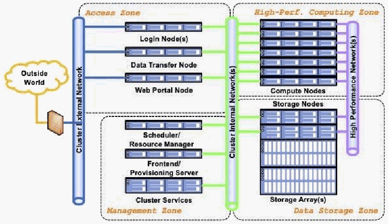

NIST Special Publication · PDF 原文抽出
High-Performance Computing Security: Architecture, Threat Analysis, and Security Posture
高性能計算（HPC）のセキュリティ：アーキテクチャ、脅威分析、セキュリティ態勢
NIST SP 800-223（High-Performance Computing Security: Architecture, Threat Analysis, and Security Posture）の英文と日本語訳を段落ごとに並べた閲覧用ページです。HPCシステムの参照アーキテクチャを基礎として用語と構成要素を整理し、脅威、セキュリティ態勢、課題、推奨事項を示します。 翻訳は非公式です。要件の確認にはNIST の正式版 PDFを参照してください。
PDF から抽出した原文は原本との照合待ちです。
本文の数式はLaTeXの構造からKaTeXで表示しています。
NIST Special Publication 800
NIST特別刊行物800
NIST SP 800-223
NIST SP 800-223
High-Performance Computing Security
高性能計算（HPC）のセキュリティ
Architecture, Threat Analysis, and Security Posture
アーキテクチャ、脅威分析、セキュリティ態勢
Yang Guo
Yang Guo
Ramaswamy Chandramouli
Ramaswamy Chandramouli
Lowell Wofford Rickey Gregg Gary Key Antwan Clark Catherine Hinton Andrew Prout Albert Reuther Ryan Adamson Aron Warren Purushotham Bangalore Erik Deumens Csilla Farkas
Lowell Wofford、Rickey Gregg、Gary Key、Antwan Clark、Catherine Hinton、Andrew Prout、Albert Reuther、Ryan Adamson、Aron Warren、Purushotham Bangalore、Erik Deumens、Csilla Farkas
This publication is available free of charge from: https://doi.org/10.6028/NIST.SP.800-223
本刊行物は、https://doi.org/10.6028/NIST.SP.800-223 から無料で入手できる。
NIST Special Publication 800
NIST特別刊行物800
NIST SP 800-223
NIST SP 800-223
High-Performance Computing Security
高性能計算（HPC）のセキュリティ
Architecture, Threat Analysis, and Security Posture
アーキテクチャ、脅威分析、セキュリティ態勢
Yang Guo
Yang Guo
Andrew Prout
Andrew Prout
Ramaswamy Chandramouli
Ramaswamy Chandramouli
Albert Reuther
Albert Reuther
Computer Security Division
コンピュータセキュリティ部門
MIT Lincoln Laboratory
MITリンカーン研究所
Information Technology Laboratory
情報技術研究所
Ryan Adamson
Ryan Adamson
Lowell Wofford
Lowell Wofford
Oak Ridge National Laboratory
オークリッジ国立研究所
Amazon.com, Inc.
Amazon.com, Inc.
Aron Warren
Aron Warren
Rickey Gregg
Rickey Gregg
Sandia National Laboratories
サンディア国立研究所
Gary Key
Gary Key
Purushotham Bangalore
Purushotham Bangalore
HPCMP
HPCMP
University of Alabama
アラバマ大学
Antwan Clark
Antwan Clark
Erik Deumens
Erik Deumens
Laboratory for Physical Sciences
物理科学研究所
University of Florida
フロリダ大学
Catherine Hinton
Catherine Hinton
Csilla Farkas
Csilla Farkas
Los Alamos National Laboratory
ロスアラモス国立研究所
University of South Carolina
サウスカロライナ大学
This publication is available free of charge from: https://doi.org/10.6028/NIST.SP.800-223
本刊行物は、https://doi.org/10.6028/NIST.SP.800-223 から無料で入手できる。
February 2024
2024年2月

米国商務省の印章。円周の文字は「商務省」および「アメリカ合衆国」。
U.S. Department of Commerce Gina M. Raimondo, Secretary
米国商務省 Gina M. Raimondo（長官）
National Institute of Standards and Technology
米国国立標準技術研究所（NIST）
Laurie E. Locascio, NIST Director and Under Secretary of Commerce for Standards and Technology
Laurie E. Locascio（NIST所長兼商務省標準技術担当次官）
Certain commercial entities, equipment, or materials may be identified in this document in order to describe an experimental procedure or concept adequately. Such identification is not intended to imply recommendation or endorsement by the National Institute of Standards and Technology (NIST), nor is it intended to imply that the entities, materials, or equipment are necessarily the best available for the purpose.
実験手順または概念を十分に説明するため、この文書で特定の商業事業体、機器、または材料に言及することがある。そのような言及は、米国国立標準技術研究所（NIST）による推奨または保証を意味するものではなく、また、当該事業体、材料、機器が目的に対して必ずしも最良であることを意味するものでもない。
There may be references in this publication to other publications currently under development by NIST in accordance with its assigned statutory responsibilities. The information in this publication, including concepts and methodologies, may be used by federal agencies even before the completion of such companion publications. Thus, until each publication is completed, current requirements, guidelines, and procedures, where they exist, remain operative. For planning and transition purposes, federal agencies may wish to closely follow the development of these new publications by NIST.
本刊行物では、NISTが割り当てられた法定責務に従って現在策定中の他の刊行物を参照している場合がある。本刊行物に含まれる概念や方法論を含む情報は、関連刊行物の完成前であっても連邦機関が利用できる。したがって、各刊行物が完成するまでは、既存の要件、ガイドライン、手順は引き続き有効である。計画および移行のため、連邦機関はNISTによる新刊行物の策定状況を注意深く確認するとよいであろう。
Organizations are encouraged to review all draft publications during public comment periods and provide feedback to NIST. Many NIST cybersecurity publications, other than the ones noted above, are available at https://csrc.nist.gov/publications.
各組織は、パブリックコメント期間中にすべての草案を確認し、NISTに意見を提出することが推奨される。上記で示したものを除き、NISTのサイバーセキュリティ刊行物の多くは、https://csrc.nist.gov/publications から入手できる。
Authority This publication has been developed by NIST in accordance with its statutory responsibilities under the Federal Information Security Modernization Act (FISMA) of 2014, 44 U.S.C. § 3551 et seq., Public Law (P.L.) 113-283. NIST is responsible for developing information security standards and guidelines, including minimum requirements for federal information systems, but such standards and guidelines shall not apply to national security systems without the express approval of appropriate federal officials exercising policy authority over such systems. This guideline is consistent with the requirements of the Office of Management and Budget (OMB) Circular A-130.
権限 本刊行物は、2014年連邦情報セキュリティ近代化法（FISMA）、44 U.S.C. § 3551以下、Public Law（P.L.）113-283に基づくNISTの法定責務に従って作成された。NISTは、連邦情報システムの最低要件を含む情報セキュリティ標準およびガイドラインの策定を担う。ただし、これらの標準およびガイドラインは、当該システムに関する政策権限を行使する適切な連邦当局者の明示的な承認がない限り、国家安全保障システムに適用してはならない。本ガイドラインは、行政管理予算局（OMB）回章A-130の要件と整合している。
Nothing in this publication should be taken to contradict the standards and guidelines made mandatory and binding on federal agencies by the Secretary of Commerce under statutory authority. Nor should these guidelines be interpreted as altering or superseding the existing authorities of the Secretary of Commerce, Director of the OMB, or any other federal official. This publication may be used by nongovernmental organizations on a voluntary basis and is not subject to copyright in the United States. Attribution would, however, be appreciated by NIST.
本刊行物のいかなる内容も、法定権限に基づき商務長官が連邦機関に義務付け、拘束力を持たせた標準およびガイドラインに矛盾すると解釈してはならない。また、本ガイドラインは、商務長官、OMB長官、その他の連邦当局者が有する既存の権限を変更または置き換えるものと解釈してはならない。本刊行物は非政府組織が任意に利用でき、米国内で著作権の対象ではない。ただし、NISTへの出典表示を歓迎する。
NIST Technical Series Policies Copyright, Use, and Licensing Statements NIST Technical Series Publication Identifier Syntax
NIST技術シリーズの方針、著作権・利用・ライセンスに関する声明、NIST技術シリーズ刊行物の識別子の表記形式
Publication History Approved by the NIST Editorial Review Board on 2024-02-02.
刊行履歴 2024年2月2日にNIST編集審査委員会が承認した。
How to Cite this NIST Technical Series Publication: Guo Y, Chandramouli R, Wofford L, Gregg R, Key G, Clark A, Hinton C, Prout A, Reuther A, Adamson R, Warren A, Bangalore P, Deumens E, Farkas C (2024) High-Performance Computing Security: Architecture, Threat Analysis, and Security Posture. (National Institute of Standards and Technology, Gaithersburg, MD), NIST Special Publication (SP) NIST SP 800-223. https://doi.org/10.6028/NIST.SP.800-223
本NIST技術シリーズ刊行物の引用方法：Guo Y、Chandramouli R、Wofford L、Gregg R、Key G、Clark A、Hinton C、Prout A、Reuther A、Adamson R、Warren A、Bangalore P、Deumens E、Farkas C（2024）『高性能計算のセキュリティ：アーキテクチャ、脅威分析、セキュリティ態勢』（米国国立標準技術研究所、メリーランド州ゲイザースバーグ）、NIST特別刊行物（SP）NIST SP 800-223。https://doi.org/10.6028/NIST.SP.800-223
Author ORCID iDs Yang Guo: 0000-0002-3245-3069 Ramaswamy Chandramouli: 0000-0002-7387-5858 Lowell Wofford: 0000-0003-1003-5090 Catherine Hinton: 0000-0002-5230-2428 Albert Reuther: 0000-0002-3168-3663 Aron Warren: 0000-0002-5090-2198 Purushotham Bangalore: 0000-0002-1098-9997 Erik Deumens: 0000-0002-7398-3090
著者のORCID iD Yang Guo：0000-0002-3245-3069、Ramaswamy Chandramouli：0000-0002-7387-5858、Lowell Wofford：0000-0003-1003-5090、Catherine Hinton：0000-0002-5230-2428、Albert Reuther：0000-0002-3168-3663、Aron Warren：0000-0002-5090-2198、Purushotham Bangalore：0000-0002-1098-9997、Erik Deumens：0000-0002-7398-3090
Contact Information sp800-223-comments@list.nist.gov
連絡先 sp800-223-comments@list.nist.gov
National Institute of Standards and Technology Attn: Computer Security Division, Information Technology Laboratory 100 Bureau Drive (Mail Stop 8930) Gaithersburg, MD 20899-8930
米国国立標準技術研究所 宛先：コンピュータセキュリティ部門、情報技術研究所 100 Bureau Drive（Mail Stop 8930） Gaithersburg, MD 20899-8930
Additional Information Additional information about this publication is available at https://csrc.nist.gov/pubs/sp/800/223/final, including related content, potential updates, and document history.
追加情報 本刊行物に関する追加情報（関連コンテンツ、更新の可能性、文書履歴を含む）は、https://csrc.nist.gov/pubs/sp/800/223/final から入手できる。
All comments are subject to release under the Freedom of Information Act (FOIA).
すべてのコメントは、情報公開法（FOIA）に基づく公開の対象である。
Abstract
要旨
Security is essential component of high-performance computing (HPC). HPC systems often differ based on the evolution of their system designs, the applications they run, and the missions they support. An HPC system may also have its own unique security requirements, follow different security guidance, and require tailored security solutions. Their complexity and uniqueness impede the sharing of security solutions and knowledge. This NIST Special Publication aims to standardize and facilitate the information and knowledge-sharing of HPC security using an HPC system reference architecture and key components as the basis of an HPC system lexicon. This publication also analyzes HPC threats, considers current HPC security postures and challenges, and makes best-practice recommendations.
高性能計算（HPC）にとってセキュリティは不可欠である。HPCシステムは、システム設計の進化、実行するアプリケーション、支援するミッションによって異なることがよくある。また、各HPCシステムには固有のセキュリティ要件があり、異なるセキュリティ指針に従い、個別に調整したセキュリティ対策が必要となる場合がある。その複雑さと固有性は、セキュリティ対策や知識の共有を妨げる。本NIST特別刊行物は、HPCシステムの用語体系の基礎として参照アーキテクチャと主要コンポーネントを用い、HPCセキュリティに関する情報と知識の共有を標準化し、促進することを目的としている。また、HPCの脅威を分析し、現在のセキュリティ態勢と課題を検討し、ベストプラクティスに基づく推奨事項を示す。
Keywords
キーワード
high-performance computing; HPC reference architecture; HPC security; HPC security posture; HPC threat analysis; security guidance.
高性能計算、高性能計算（HPC）参照アーキテクチャ、HPCセキュリティ、HPCセキュリティ態勢、HPC脅威分析、セキュリティ指針。
Reports on Computer Systems Technology
コンピュータシステム技術に関する報告書
The Information Technology Laboratory (ITL) at the National Institute of Standards and Technology (NIST) promotes the U.S. economy and public welfare by providing technical leadership for the Nation’s measurement and standards infrastructure. ITL develops tests, test methods, reference data, proof of concept implementations, and technical analyses to advance the development and productive use of information technology. ITL’s responsibilities include the development of management, administrative, technical, and physical standards and guidelines for the cost-effective security and privacy of other than national security-related information in federal information systems. The Special Publication 800-series reports on ITL’s research, guidelines, and outreach efforts in information system security, and its collaborative activities with industry, government, and academic organizations.
米国国立標準技術研究所（NIST）の情報技術研究所（ITL）は、国の計量・標準基盤に技術的リーダーシップを発揮し、米国経済と公共福祉の向上を推進している。ITLは、情報技術の発展と生産的な利用を促進するため、試験、試験方法、参照データ、概念実証実装、技術分析を開発する。ITLの責務には、連邦情報システムにおける国家安全保障関連以外の情報について、費用対効果の高いセキュリティとプライバシーを実現するための管理面、運用面、技術面、物理面の標準およびガイドラインの策定が含まれる。特別刊行物800シリーズは、情報システムセキュリティに関するITLの研究、ガイドライン、普及活動、および産業界、政府、学術機関との共同活動を報告する。
Patent Disclosure Notice
特許開示に関する通知
NOTICE: ITL has requested that holders of patent claims whose use may be required for compliance with the guidance or requirements of this publication disclose such patent claims to ITL. However, holders of patents are not obligated to respond to ITL calls for patents and ITL has not undertaken a patent search in order to identify which, if any, patents may apply to this publication.
通知：ITLは、本刊行物の指針または要件への準拠に使用が必要となる可能性のある特許請求項について、その権利者にITLへの開示を求めている。ただし、特許権者にはITLの特許情報提供要請に応じる義務はなく、ITLも、本刊行物に適用される可能性がある特許を特定するための特許調査を実施していない。
As of the date of publication and following call(s) for the identification of patent claims whose use may be required for compliance with the guidance or requirements of this publication, no such patent claims have been identified to ITL.
刊行日時点で、本刊行物の指針または要件への準拠に使用が必要となる可能性のある特許請求項の特定を要請した後も、そのような特許請求項はITLに申告されていない。
No representation is made or implied by ITL that licenses are not required to avoid patent infringement in the use of this publication.
本刊行物を利用する際に特許侵害を避けるためのライセンスが不要であると、ITLが表明または示唆するものではない。
Table of Contents
目次
1. Introduction — 1
1. 序論 — 1
2. HPC System Reference Architecture and Main Components — 2
2. HPCシステムの参照アーキテクチャと主要コンポーネント — 2
2.1.1. Components of the High-Performance Computing Zone — 3
2.1.1. 高性能計算ゾーンのコンポーネント — 3
2.1.2. Components of the Data Storage Zone — 4
2.1.2. データストレージゾーンのコンポーネント — 4
2.1.3. Parallel File System — 4
2.1.3. 並列ファイルシステム — 4
2.1.4. Archival and Campaign Storage — 5
2.1.4. アーカイブおよびキャンペーンストレージ — 5
2.1.5. Burst Buffer — 5
2.1.5. バーストバッファ — 5
2.1.6. Components of the Access Zone — 6
2.1.6. アクセスゾーンのコンポーネント — 6
2.1.7. Components of the Management Zone — 6
2.1.7. 管理ゾーンのコンポーネント — 6
2.1.8. General Architecture and Characteristics — 6
2.1.8. アーキテクチャの概要と特性 — 6
2.1.9. Basic Services — 7
2.1.9. 基本サービス — 7
2.1.10. Configuration Management — 7
2.1.10. 構成管理 — 7
2.1.11. HPC Scheduler and Workflow Management — 7
2.1.11. HPCスケジューラーとワークフロー管理 — 7
2.1.12. HPC Software — 8
2.1.12. HPCソフトウェア — 8
2.1.13. User Software — 8
2.1.13. ユーザーソフトウェア — 8
2.1.14. Site-Provided Software and Vendor Software — 8
2.1.14. サイト提供ソフトウェアおよびベンダーソフトウェア — 8
2.1.15. Containerized Software in HPC — 9
2.1.15. HPCにおけるコンテナ化ソフトウェア — 9
3. HPC Threat Analysis — 10
3. HPC脅威分析 — 10
3.2.1. Access Zone Threats — 11
3.2.1. アクセスゾーンの脅威 — 11
3.2.2. Management Zone Threats — 11
3.2.2. 管理ゾーンの脅威 — 11
3.2.3. High-Performance Computing Zone Threats — 12
3.2.3. 高性能計算ゾーンの脅威 — 12
3.2.4. Data Storage Zone Threats — 12
3.2.4. データストレージゾーンの脅威 — 12
4. HPC Security Posture, Challenges, and Recommendations — 14
4. HPCのセキュリティ態勢、課題、および推奨事項 — 14
5. Conclusions — 19
5. 結論 — 19
References.......................................................................................................................................20 Appendix A. HPC Architecture Variants.............................................................................................24
参考文献 — 20 付録A. HPCアーキテクチャの変種 — 24
List of Figures
図一覧
Fig. 1. HPC System Reference Architecture..........................................................................................3
図1. HPCシステムの参照アーキテクチャ — 3
1. Introduction
1. 序論
In 2015, Executive Order 13702 established the National Strategic Computing Initiative (NSCI) to maximize the benefits of high-performance computing (HPC) for economic competitiveness and scientific discovery. The ability to process large volumes of data and perform complex calculations at high speeds is a key part of the Nation’s vision for maintaining its global competitive edge.
2015年、大統領令13702により、経済競争力と科学的発見のために高性能計算（HPC）の恩恵を最大化する国家戦略的コンピューティング・イニシアチブ（NSCI）が設立された。大量のデータを処理し、複雑な計算を高速に実行する能力は、世界的な競争力を維持するという米国の構想の重要な要素である。
Security is essential to achieving the anticipated benefits of HPC. HPC systems bear some resemblance to enterprise IT computing, which allows for the effective application of traditional IT security solutions. However, they also have significant differences. An HPC system is designed to maximize performance, so its architecture, hardware components, software stacks, and working environment are very different from enterprise IT. Additionally, most HPC systems serve multiple projects and user communities, leading to more complex security concerns than those encountered in enterprise systems. As such, security solutions must be tailored to the HPC system’s requirements. Furthermore, HPC systems are often different from one another due to the evolution of their system designs, the applications they run, and the missions they support. An HPC system frequently has its own unique method of applying security requirements and may follow different security guidance, which can impede the sharing of security solutions and knowledge.
HPCが期待される恩恵を実現するには、セキュリティが不可欠である。HPCシステムはエンタープライズITコンピューティングと似た面があり、従来のITセキュリティ対策を効果的に適用できる。一方で、大きな違いもある。HPCシステムは性能を最大化するよう設計されるため、そのアーキテクチャ、ハードウェア構成要素、ソフトウェアスタック、運用環境はエンタープライズITとは大きく異なる。また、多くのHPCシステムは複数のプロジェクトや利用者コミュニティにサービスを提供するため、エンタープライズシステムより複雑なセキュリティ上の課題が生じる。そのため、セキュリティ対策はHPCシステムの要件に合わせて調整する必要がある。さらに、HPCシステムは、システム設計の進化、実行するアプリケーション、支援するミッションによって互いに異なることがよくある。各システムには独自のセキュリティ要件適用方法があり、異なるセキュリティ指針に従う場合もあるため、対策や知識の共有が難しくなることがある。
This NIST Special Publication aims to standardize and facilitate the sharing of HPC security information and knowledge through the development of an HPC system reference architecture and key components, which are introduced as the basics of the HPC system lexicon. The reference architecture divides an HPC system into four function zones. A zone-based HPC reference architecture captures the most common features across the majority of HPC systems and segues into HPC system threat analysis. Key HPC security characteristics and use requirements are laid out alongside the major threats faced by the system and individual function zones. HPC security postures, challenges, recommendations, and some currently recognized variants are also included. This publication is intended to be a conceptual guide, not a checklist of requirements.
本NIST特別刊行物は、HPCシステムの参照アーキテクチャと主要コンポーネントを定義し、HPCシステムの用語体系の基礎として紹介することで、HPCセキュリティに関する情報と知識の共有を標準化し、促進することを目的としている。参照アーキテクチャでは、HPCシステムを4つの機能ゾーンに分ける。ゾーン方式の参照アーキテクチャは、多くのHPCシステムに共通する特徴を捉え、HPCシステムの脅威分析へつなげる。主要なHPCセキュリティ特性と利用要件を、システム全体および各機能ゾーンが直面する主な脅威と併せて示す。また、HPCのセキュリティ態勢、課題、推奨事項、および現在認識されているいくつかの変種も取り上げる。本刊行物は概念的なガイドであり、要件チェックリストではない。
Finally, emerging technologies — such as novel networking technology, data storage solutions, hardware acceleration technology, and others — have the potential to influence the HPC reference architecture and security posture. Consequently, this document will be updated as needed.
最後に、新しいネットワーク技術、データストレージソリューション、ハードウェアアクセラレーション技術などの新興技術は、HPCの参照アーキテクチャやセキュリティ態勢に影響を与える可能性がある。そのため、本書は必要に応じて更新される。
2. HPC System Reference Architecture and Main Components
2. HPCシステムの参照アーキテクチャと主要コンポーネント
The HPC system is complex and evolving, and a common lexicon can help describe and identify an HPC system’s architecture, critical elements, security threats, and potential risks. An HPC system is divided into four function zones:
HPCシステムは複雑かつ進化を続けており、共通の用語体系があれば、HPCシステムのアーキテクチャ、重要な要素、セキュリティ上の脅威、潜在的なリスクを説明し、特定しやすくなる。HPCシステムは次の4つの機能ゾーンに分かれる。
1.The high-performance computing zone consists of a pool of compute nodes connected by one or more high-speed networks. The high-performance computing zone provides key services specifically designed to run parallel jobs at scale.
1.高性能計算ゾーンは、1つ以上の高速ネットワークで接続された計算ノード群で構成される。このゾーンは、大規模な並列ジョブを実行するために特化した主要サービスを提供する。
2.The data storage zone comprises one or multiple high-speed parallel file systems that provide data storage service for user data. The high-speed parallel file systems are designed to store very large data sets and provide fast access to data for reading and writing.
2.データストレージゾーンは、ユーザーデータ用のストレージサービスを提供する1つ以上の高速並列ファイルシステムで構成される。これらのシステムは、非常に大きなデータセットを保存し、読み書きのために高速でアクセスできるよう設計されている。
3.The access zone has one or more nodes that are connected to external networks, such as the broader organizational network or the internet. This zone provides the means for authenticating and authorizing the access and connections of users and administrators. The access zone provides various services, including interactive shells, web-based portals, data transfer, data visualization, and others.
3.アクセスゾーンには、組織内のより広域なネットワークやインターネットなどの外部ネットワークに接続された1つ以上のノードがある。このゾーンは、利用者と管理者のアクセスおよび接続を認証・認可する手段を提供する。対話型シェル、Webポータル、データ転送、データ可視化など、さまざまなサービスを提供する。
4.The management zone comprises multiple management nodes and/or cloud service clusters through which HPC management services are provided. The management zone allows HPC system administrators to configure and manage the HPC system, including the configuration of compute nodes, storage, networks, provisioning, identity management, auditing, system monitoring, and vulnerability assessment. Various management software modules (e.g., job schedulers, workflow management, and the Domain Name System [DNS]) run in the management zone.
4.管理ゾーンは、HPC管理サービスを提供する複数の管理ノードおよび／またはクラウドサービスクラスターで構成される。このゾーンにより、HPCシステム管理者は、計算ノード、ストレージ、ネットワーク、プロビジョニング、ID管理、監査、システム監視、脆弱性評価など、HPCシステムを構成し管理できる。ジョブスケジューラー、ワークフロー管理、ドメインネームシステム（DNS）など、さまざまな管理ソフトウェアモジュールが管理ゾーンで動作する。
The HPC system reference architecture is depicted in Fig. 1.
HPCシステムの参照アーキテクチャを図1に示す。

HPCシステムの参照アーキテクチャ図。図中ラベル：外部世界、クラスター内部ネットワーク、アクセスゾーン、ログインノード、データ転送ノード、Webポータルノード、管理ゾーン、スケジューラー／リソースマネージャー、フロントエンド／プロビジョニングサーバー、クラスターサービス、高性能計算ゾーン、計算ノード、高性能ネットワーク、ストレージノード、データストレージゾーン、ストレージアレイ。
Fig. 1. HPC System Reference Architecture
図1. HPCシステムの参照アーキテクチャ
2.1. Main Components
2.1. 主要コンポーネント
2.1.1. Components of the High-Performance Computing Zone
2.1.1. 高性能計算ゾーンのコンポーネント
An HPC cluster consists of a collection of independent computing systems, called compute nodes, which are interconnected via high-speed networks. Compute nodes have the same components as a laptop, desktop, or server, including central processing units (CPUs), memory, disk space, and networking interface cards. However, they are architecturally tuned for the requirements of HPC workloads. In some HPC architectures, a compute node may not have local disks and instead use the data storage services of remote storage servers. In addition, there may be different types of nodes for different types of tasks, and some compute nodes are equipped with hardware accelerators to speed up specific applications. For instance, compute nodes often utilize graphics processing units (GPUs) [1] to accelerate modeling and simulation or AI and machine learning (ML) model training.
HPCクラスターは、計算ノードと呼ばれる独立したコンピューターシステム群を高速ネットワークで相互接続したものである。計算ノードには、中央処理装置（CPU）、メモリ、ディスク容量、ネットワークインターフェースカードなど、ノートPC、デスクトップPC、サーバーと同様のコンポーネントがある。ただし、HPCワークロードの要件に合わせてアーキテクチャが最適化されている。HPCアーキテクチャによっては、計算ノードにローカルディスクがなく、リモートストレージサーバーのサービスを利用する場合もある。また、タスクの種類に応じた複数のノード種別があり、特定のアプリケーションを高速化するため、ハードウェアアクセラレーターを備えた計算ノードもある。例えば、計算ノードでは、モデリングやシミュレーション、AIおよび機械学習（ML）モデルの学習を高速化するため、グラフィックス処理装置（GPU）[1]がよく利用される。
An HPC compute node has its own software stack installed (e.g., operating system [OS], compilers, software libraries, etc.) to support applications. The installation and configuration of the software stacks are cluster-wide, centrally managed, and controlled by the management zone. The number of compute nodes in an HPC system ranges from a few nodes to hundreds and even tens of thousands of nodes.
HPC計算ノードには、アプリケーションを支援するソフトウェアスタック（例：オペレーティングシステム（OS）、コンパイラー、ソフトウェアライブラリーなど）がインストールされている。ソフトウェアスタックのインストールと構成は、クラスター全体で管理ゾーンが一元的に実施・制御する。HPCシステムの計算ノード数は、数台から数百台、さらには数万台に及ぶ。
A frequent requirement of HPC networking, which interconnects computer nodes and file systems, is to have high throughput and low latency so that the compute nodes and parallel file system (PFS) in the data storage zone can work as one supercomputer. The exact requirements for bandwidth and latency are dictated by the intended workload. HPC networking often employs specifically designed protocols, networking cards, processor nodes, and switches to optimize network performance. The popular HPC interconnect networking includes InfiniBand [2], Omni-Path [3], Slingshot [4], Ethernet, and others.
HPCネットワークは、コンピュータノードとファイルシステムを相互接続するため、高スループットと低レイテンシがしばしば求められる。これにより、データストレージゾーン内の計算ノードと並列ファイルシステム（PFS）が一つのスーパーコンピューターとして機能できる。必要な帯域幅とレイテンシは、対象となるワークロードによって決まる。HPCネットワークでは、性能を最適化するために専用設計のプロトコル、ネットワークカード、プロセッサノード、スイッチがよく使われる。一般的なHPC相互接続ネットワークには、InfiniBand [2]、Omni-Path [3]、Slingshot [4]、Ethernetなどがある。
A high-performance computing zone typically utilizes non-high-performance communication networks, like ethernet, as cluster internal networks that connect the high-performance computing zone with the management zone and access zone for traffic associated with maintenance activities as opposed to HPC traffic.
高性能計算ゾーンでは通常、Ethernetなどの非高性能通信ネットワークをクラスター内部ネットワークとして使い、高性能計算ゾーンを管理ゾーンおよびアクセスゾーンに接続して、HPCトラフィックではなく保守活動に関連するトラフィックを扱う。
2.1.2. Components of the Data Storage Zone
2.1.2. データストレージゾーンのコンポーネント
Several different classes of storage systems may be present inside of the data storage zone. In general, storage systems within this zone cannot be effectively separated from the HPC resources that they support from an administrative privilege perspective. Typical classes of storage found within this zone include PFSs and archival file systems that support campaign storage and protect against data loss. HPC systems may have other file systems that store non-user data. For instance, the management zone often has its own file system that stores the OS images and configuration files. In that case, the file system is included in the corresponding function zone.
データストレージゾーンには、複数のクラスのストレージシステムが存在する場合がある。一般に、このゾーン内のストレージシステムは、管理者権限の観点から、それらが支援するHPCリソースと効果的に分離できない。このゾーンにある代表的なストレージのクラスには、PFS、およびキャンペーンストレージを支えデータ損失から保護するアーカイブファイルシステムがある。HPCシステムには、ユーザーデータ以外を保存するファイルシステムもある。例えば、管理ゾーンには、OSイメージや構成ファイルを保存する専用ファイルシステムがある場合がある。その場合、そのファイルシステムは対応する機能ゾーンに含める。
HPC applications’ initial data, intermediate results, and results are stored in the data storage zone and can be accessed during the application runtime and after the application’s completion. External HPC users can also access user data through the login nodes and/or data transfer nodes in the access zone.
HPCアプリケーションの初期データ、中間結果、最終結果はデータストレージゾーンに保存され、アプリケーションの実行中および完了後にアクセスできる。外部のHPC利用者も、アクセスゾーンのログインノードおよび／またはデータ転送ノードを介してユーザーデータにアクセスできる。
The storage capacity of these file systems is often measured in petabytes and can reach up to exabytes. File systems within the data storage zone will generally use a transport mechanism appropriate to the tier. For example, high-bandwidth file systems may be attached to the HPC resource’s high-performance network, while lower bandwidth file systems may use 10 Gbps or 100 Gbps ethernet. Access control for most HPC file systems is enforced by the operating system software of nodes on which these file systems are mounted. As such, file systems should not be mounted outside of their security boundaries. A rogue system that can mount a file system will have complete control of all file system data, can spoof packets on the high-speed network, and can possibly gain privileges elsewhere within other zones of the HPC security enclave.
これらのファイルシステムの容量はペタバイト単位で測られることが多く、エクサバイトに達する場合もある。データストレージゾーン内のファイルシステムは、通常、ストレージ階層に適した転送方式を使う。例えば、広帯域のファイルシステムはHPCリソースの高性能ネットワークに接続される一方、低帯域のファイルシステムでは10 Gbpsまたは100 GbpsのEthernetが使われる場合がある。ほとんどのHPCファイルシステムでは、マウント先ノードのオペレーティングシステムソフトウェアがアクセス制御を実施する。そのため、ファイルシステムをセキュリティ境界の外部でマウントすべきではない。ファイルシステムをマウントできる不正なシステムは、すべてのファイルシステムデータを完全に制御でき、高速ネットワーク上でパケットを偽装し、HPCセキュリティ領域内の他のゾーンで権限を得る可能性もある。
2.1.3. Parallel File System
2.1.3. 並列ファイルシステム
Since HPC workloads can vary significantly, a PFS is often required to support read-intensive and write-intensive applications with sequential and random-access patterns at speeds of up to terabytes per second. Commonly seen file systems include Lustre [5], GPFS [6], and IBM Spectrum Scale [7]. During procurement, a PFS will typically be designed to hit a particular aggregate bandwidth target rather than a capacity requirement. These PFSs will typically consist of a cluster of systems to maintain metadata about files and locations as well as servers that act as storage targets. Clients that mount the file system will typically load the file system client software via a kernel module. Storage target servers will have backing storage arrays configured with dozens of disks in a redundant array of inexpensive disk (RAID) strategy.
HPCワークロードは大きく異なるため、PFSには、シーケンシャルおよびランダムアクセスパターンの読み取り中心・書き込み中心のアプリケーションを、毎秒数テラバイトの速度で支援することがしばしば求められる。一般的なファイルシステムには、Lustre [5]、GPFS [6]、IBM Spectrum Scale [7]がある。調達時には、PFSは通常、容量要件よりも合計帯域幅の目標を達成するよう設計される。一般に、これらのPFSは、ファイルや格納場所のメタデータを管理するシステムクラスターと、ストレージターゲットとして動作するサーバーで構成される。ファイルシステムをマウントするクライアントは、通常、カーネルモジュールを介してクライアントソフトウェアを読み込む。ストレージターゲットサーバーには、数十台のディスクを備えたストレージアレイが、安価なディスクを冗長化するRAID方式で構成されている。
Both GPFS and Lustre-based PFSs are prone to performance degradation when a certain capacity threshold is reached. These file systems may be regularly pruned of unwanted files with a strategy decided by the file system administrators. Some deployments will delete files older than a certain age, which forces HPC users to transfer job output to a longer-term file system, such as campaign storage. PFSs tends to be somewhat unreliable, depending on the types of activities being performed by running jobs and users. Because these are distributed file systems, file-system software must solve distributed locking of files to ensure deterministic file updates when multiple clients are writing to the same file at once. Additionally, PFSs are susceptible to denial-of-service conditions even during legitimate user operations, such as listing a directory with millions of files or applications that perform poor file locking semantics.
GPFSおよびLustreベースのPFSは、容量が一定のしきい値に達すると性能が低下しやすくなる。ファイルシステム管理者が決めた方針に従い、不要なファイルを定期的に削除する場合がある。運用によっては、一定期間より古いファイルを削除するため、HPC利用者はジョブの出力をキャンペーンストレージなどの長期保存用ファイルシステムへ移す必要がある。実行中のジョブや利用者の活動の種類によっては、PFSの信頼性がやや低くなる傾向がある。分散ファイルシステムでは、複数のクライアントが同じファイルへ同時に書き込む場合に一貫した更新を保証するため、ファイルの分散ロックを扱う必要がある。また、数百万件のファイルを含むディレクトリーの一覧表示や、不適切なファイルロック方式を用いるアプリケーションなど、正当な利用操作の最中でもPFSはサービス拒否状態に陥る可能性がある。
2.1.4. Archival and Campaign Storage
2.1.4. アーカイブおよびキャンペーンストレージ
The term “campaign” is understood here as a collection of coordinated projects that are working toward a common set of goals and deliverables. Archival and campaign storage systems represent a class of storage that is more resilient to failure conditions than a PFS and is often less expensive per gigabyte. These advantages come at the cost of bandwidth and an increased latency of data transfer. While a PFS acts as a temporary short-term scratch file system, campaign storage supports the long-term storage needs of a project over its life cycle. Finished data products that support scientific publications or other high-value datasets may also be stored in an archival file system. The retention time for data on a campaign storage file system is measured in years, while the retention of data within an archival storage system is measured in decades. Both campaign and archival storage systems might employ low-latency disks — such as solid-state drives (SSD) or non-volatile memory express (NVMe) drives within a small tier of storage that acts as a cache — and are backed by cheaper, higher capacity media, such as spinning disks and/or tape media.
ここで「キャンペーン」とは、共通の目標および成果物に向けて協調して取り組む複数のプロジェクトの集合を指す。アーカイブおよびキャンペーンストレージは、PFSより障害に強く、ギガバイト当たりのコストも低いことが多いストレージクラスである。その代わり、帯域幅が低く、データ転送のレイテンシが高くなる。PFSが一時的な短期スクラッチファイルシステムとして機能するのに対し、キャンペーンストレージはプロジェクトのライフサイクル全体にわたる長期保存のニーズを支援する。科学論文やその他の高価値データセットを支える完成データも、アーカイブファイルシステムに保存できる。キャンペーンストレージにおけるデータの保持期間は年単位、アーカイブストレージでは数十年単位である。両方のストレージシステムで、キャッシュとして機能する小規模な階層に低レイテンシのSSDやNVMeドライブを用い、より安価で大容量の回転ディスクおよび／またはテープ媒体をバックエンドに配置する場合がある。
2.1.5. Burst Buffer
2.1.5. バーストバッファ
Burst buffer commonly refers to a caching mechanism for storage systems. For applications that require extremely low latency or high-bandwidth memory-to-disk data transfer during runtime, intermediate storage layers that contain “burst buffers” have been incorporated as brokers to primarily mitigate the effects of input/output (I/O) contention and the bandwidth burden on PFSs. These burst buffers can pre-fetch data from the PFS before a computing job begins and stage data out to a parallel file system after a computing job has completed. This saves job runtime that would normally be spent performing bulk I/O to the PFS and allows it to be spent on computation instead. Typical HPC infrastructures contain the following intermediate storage architectures:
バーストバッファとは、一般にストレージシステムのキャッシュ機構を指す。実行中に極めて低いレイテンシまたはメモリとディスク間の高帯域データ転送を必要とするアプリケーション向けに、「バーストバッファ」を備えた中間ストレージ層を仲介役として導入し、主に入出力（I/O）の競合とPFSの帯域負荷を軽減する。バーストバッファは、計算ジョブ開始前にPFSからデータを先読みし、ジョブ完了後に並列ファイルシステムへデータを書き戻せる。これにより、通常なら大量のI/Oに費やすジョブ実行時間を節約し、その時間を計算に充てられる。HPCインフラストラクチャで一般的な中間ストレージアーキテクチャは次のとおりである。
•Node-local burst buffer architectures: Each burst buffer is colocated with a corresponding HPC compute node [8]. This is advantageous for its scalability and improves the checkpoint bandwidth because the aggregate bandwidth increases in proportion to the number of compute nodes.
•ノードローカル型バーストバッファ：各バーストバッファを対応するHPC計算ノードと同じ場所に配置する[8]。拡張性に優れ、計算ノード数に比例して合計帯域幅が増えるため、チェックポイント処理の帯域幅が向上する。
•Remote-shared burst buffer architectures: Burst buffers are shared between multiple HPC compute nodes that are hosted on an I/O node [8]. This is advantageous for facilitating the development, deployment, and maintenance of these architectures.
•リモート共有型バーストバッファ：I/Oノード上でホストされるバーストバッファを複数のHPC計算ノード間で共有する[8]。この方式には、アーキテクチャの開発、導入、保守を容易にする利点がある。
There are also HPCs that can contain mixed burst buffer intermediate storage architectures, which combine the strengths of node-local and remote-shared burst buffer architectures.
ノードローカル型とリモート共有型の強みを組み合わせた、複合型のバーストバッファ中間ストレージアーキテクチャを備えるHPCシステムもある。
2.1.6. Components of the Access Zone
2.1.6. アクセスゾーンのコンポーネント
A typical HPC system provides one or more nodes through which users and administrators access the system. At least one of these nodes is a login node where users have access to shells to launch interactive or batch jobs. Some of these login nodes may also have specialized visualization hardware and software with which users can conduct interactive and/or post-execution visualization of their datasets. There may also be one or more data transfer nodes that provide services to transfer data into and out of the HPC system and may even provide storage-mounting services, like Network File System (NFS) [9], Common Internet File System (CIFS) [10], Server Message Block (SMB) [11], and Filesystem in Userspace (FUSE) [12] based SSH Filesystem (SSHFS) [13]. The security posture for data transfer nodes often uses the architecture of ScienceDMZ instead of a pass-through firewall device because of the performance impact that firewalls may impose. Many HPC systems now provide web portals via web portal nodes that enable a variety of web interfaces to HPC system services.
一般的なHPCシステムには、利用者と管理者がシステムにアクセスするためのノードが1つ以上ある。そのうち少なくとも1つはログインノードであり、利用者はシェルを使って対話型またはバッチ型のジョブを起動できる。一部のログインノードには、専用の可視化用ハードウェアやソフトウェアがあり、利用者はデータセットを対話形式で、または実行後に可視化できる。また、HPCシステムへのデータの取り込みと取り出しを行うデータ転送ノードが1つ以上ある場合もある。これらのノードは、Network File System（NFS）[9]、Common Internet File System（CIFS）[10]、Server Message Block（SMB）[11]、Filesystem in Userspace（FUSE）[12]に基づくSSH Filesystem（SSHFS）[13]などのストレージマウントサービスも提供することがある。ファイアウォールが性能に与える影響を避けるため、データ転送ノードのセキュリティ態勢には、通過型ファイアウォール装置ではなくScienceDMZのアーキテクチャを採用することがよくある。多くのHPCシステムでは、Webポータルノードを介してWebポータルを提供し、HPCシステムサービスへのさまざまなWebインターフェースを利用できるようにしている。
2.1.7. Components of the Management Zone
2.1.7. 管理ゾーンのコンポーネント
The complexity of HPC systems requires a significant infrastructure to operate and manage it, which is collectively referred to as the management zone. The management zone may consist of servers and network switches that enable various functions for operating the system with efficiency, effectiveness, and stability.
HPCシステムは複雑であり、運用・管理には相応のインフラストラクチャが必要である。これらをまとめて管理ゾーンと呼ぶ。管理ゾーンは、システムを効率的かつ効果的に安定して運用するための各種機能を実現するサーバーやネットワークスイッチで構成される場合がある。
2.1.8. General Architecture and Characteristics
2.1.8. アーキテクチャの概要と特性
One important characteristic of the management zone is that it has a separate security posture because non-privileged users do not need to access the management servers or services in a direct way. Privileged users responsible for configuring, maintaining, and operating the HPC system access the management zone servers and switches through extra security controls. For example, from the public-facing login nodes, they may go through a bastion host that is typically located in the management zone, or they may establish a virtual private network (VPN) with separate authentication and authorization or other appropriate security controls to reach the management zone. All systems are configured on networks that are not routed beyond the perimeter of the HPC system so that only nodes like compute nodes and storage nodes can access the services.
管理ゾーンの重要な特性の一つは、非特権ユーザーが管理サーバーやサービスへ直接アクセスする必要がないため、独立したセキュリティ態勢を持つことである。HPCシステムの構成、保守、運用を担う特権ユーザーは、追加のセキュリティ制御を介して管理ゾーンのサーバーやスイッチにアクセスする。例えば、外部公開されたログインノードから、通常は管理ゾーンに配置される踏み台ホストを経由する方法がある。または、個別の認証・認可やその他の適切なセキュリティ制御を備えた仮想プライベートネットワーク（VPN）を確立し、管理ゾーンへ接続する方法もある。すべてのシステムは、HPCシステムの境界外へルーティングされないネットワーク上に構成されるため、計算ノードやストレージノードなどのノードだけがサービスへアクセスできる。
The services provided by the management zone have clearly defined protocols and can be implemented as running on assigned hardware platforms or run as virtual machines (VMs) on a dedicated set of hardware resources. The fact that the management zone has a clear and separate security posture helps with risk assessment and the selection of controls to secure the management zone and manage the risk.
管理ゾーンのサービスは、明確に定義されたプロトコルを持ち、割り当てられたハードウェアプラットフォーム上で動作させることも、専用ハードウェアリソース上の仮想マシン（VM）として実装することもできる。管理ゾーンのセキュリティ態勢が明確に分離されているため、リスク評価、管理ゾーンを保護する制御の選択、リスク管理が容易になる。
2.1.9. Basic Services
2.1.9. 基本サービス
The HPC resources inside of the computing and data storage zones need various services to operate. Examples include Domain Name Services (DNS) [14]; the Dynamic Host Configuration Protocol (DHCP) [15]; configuration definitions, authentication, and authorization services, such as those provided by an LDAP server [16]; and the Network Time Protocol (NTP) [17] for synchronization, log management, version-controlled repositories.
計算ゾーンおよびデータストレージゾーン内のHPCリソースが稼働するには、さまざまなサービスが必要である。例として、ドメインネームサービス（DNS）[14]、動的ホスト構成プロトコル（DHCP）[15]、LDAPサーバー[16]などが提供する構成定義・認証・認可サービス、同期用のネットワークタイムプロトコル（NTP）[17]、ログ管理、バージョン管理リポジトリがある。
The management zone includes storage systems to store configuration data, node images, current versions, development and test versions, and historical versions. Storing logs from the entire HPC system is also part of the management zone as well as the servers to process the logs and alert administrators of events, problems, and incidents. Many of these services will be implemented with high availability and failover capabilities to avoid failure of the HPC resources. The network switches for the management network and the fast interconnects are often managed as part of the management zone because non-privileged users do not need direct access to those resources.
管理ゾーンには、構成データ、ノードイメージ、現行版、開発版・試験版、履歴版を保存するストレージシステムがある。HPCシステム全体のログを保存することも管理ゾーンの役割であり、ログを処理して事象、問題、インシデントを管理者に通知するサーバーも備える。HPCリソースの障害を避けるため、これらのサービスの多くは高可用性とフェイルオーバー機能を備えて実装される。非特権ユーザーが直接アクセスする必要のない管理ネットワーク用スイッチや高速相互接続も、管理ゾーンの一部として管理されることがよくある。
2.1.10. Configuration Management
2.1.10. 構成管理
Automated configuration management is crucial to ensure the stable operation of complex systems like HPC. The systems that hold the configuration database and run the server to place configurations on compute nodes, storage servers, and network switches are part of the management zone. The nodes are subject to a regularly scheduled process to verify configuration and enforce consistency with what the configuration management nodes and databases specify.
HPCのような複雑なシステムの安定運用には、自動構成管理が不可欠である。構成データベースを保持するシステムや、計算ノード、ストレージサーバー、ネットワークスイッチに構成を配布するサーバーは、管理ゾーンに含まれる。ノードでは定期的な検証処理を実施し、構成が構成管理ノードおよびデータベースの指定内容と一致するよう徹底する。
Often, the configuration management systems in the management zone have an even more restricted security posture than the management zone as a whole, with a smaller number of privileged users having access.
管理ゾーン全体よりもさらに厳しいセキュリティ態勢を構成管理システムに適用し、アクセスできる特権ユーザーをさらに少数に限定することがよくある。
2.1.11. HPC Scheduler and Workflow Management
2.1.11. HPCスケジューラーとワークフロー管理
Because of the distributed nature of HPC systems, requesting resources for given workloads is coordinated by a scheduler or workload manager, such as Slurm [18] or Kubernetes [19]. These services are run on servers in the management zone alongside the configurations and job logs. Non-privileged users access the scheduler through specific commands or an application programming interface (API). Access to the service is restricted to nodes within the HPC system perimeter. There may also be a web interface that provides a separate authenticated and authorized path for scheduling workloads, often within the strict constraints of certain application domains.
HPCシステムは分散型であるため、特定のワークロードに必要なリソースの要求は、Slurm [18]やKubernetes [19]などのスケジューラーまたはワークロードマネージャーが調整する。これらのサービスは、構成情報やジョブログとともに、管理ゾーン内のサーバーで実行される。非特権ユーザーは、専用コマンドまたはアプリケーションプログラミングインターフェース（API）を介してスケジューラーにアクセスする。サービスへのアクセスはHPCシステムの境界内のノードに制限される。ワークロードのスケジューリングにはWebインターフェースが用意される場合もあり、通常は特定のアプリケーション領域に関する厳格な制約のもとで、認証・認可された別のアクセス経路を提供する。
2.1.12. HPC Software
2.1.12. HPCソフトウェア
In addition to the management software that installs, boots, configures, and manages HPC-related systems, HPC application codes rely on several layers of scientific and performance-enhancing libraries. The layers of software that are available to users are referred to as the software stack. The lower layers of this stack are typically focused on performance and include compilers, communication libraries, and user-space interfaces to HPC hardware components. The middle layer includes performance tools, math libraries, and data or computation abstraction layers. The top of the stack consists of end-user science or production applications. Each software product within this stack may require certain versions or variants of other products and have many dependencies. For example, Hierarchical Data Format Version 5 (HDF5) [20] is a scientific data formatting library with only seven dependencies, while Data Mining Classification and Regression Methods (rminer) [21] — an R-based data mining application — has 150 software dependencies. The full software stack can be split into three general categories that differ based on the maintainer: user software, facility software, and vendor software.
HPC関連システムをインストール、起動、構成、管理する管理ソフトウェアに加え、HPCアプリケーションのコードは科学計算用および性能向上用の複数階層のライブラリーに依存する。利用者が使えるソフトウェア階層をソフトウェアスタックと呼ぶ。下位層は通常、コンパイラー、通信ライブラリー、HPCハードウェアコンポーネント向けユーザー空間インターフェースなど、性能に重点を置く。中間層には性能分析ツール、数学ライブラリー、データまたは計算の抽象化層が含まれる。最上位層は、エンドユーザー向けの科学・本番アプリケーションである。各ソフトウェア製品は、他製品の特定バージョンや派生版を必要とすることがあり、多数の依存関係を持つ場合もある。例えば、科学データ形式ライブラリーのHierarchical Data Format Version 5（HDF5）[20]の依存関係は7個だけであるが、RベースのデータマイニングアプリケーションであるData Mining Classification and Regression Methods（rminer）[21]には150個のソフトウェア依存関係がある。ソフトウェアスタック全体は、保守主体によって3つの一般的なカテゴリ、すなわちユーザーソフトウェア、施設ソフトウェア、ベンダーソフトウェアに分けられる。
2.1.13. User Software
2.1.13. ユーザーソフトウェア
Often, the end users themselves best understand how to tune their software to the bespoke hardware of an HPC system to ensure sufficient performance for their workload. Users regularly modify and recompile their software to enhance performance, fix bugs, and adapt to changes in the underlying dependencies or kernel interfaces over time. The sharing of user-built software between teams may be common. User software that is widely used is often open source and, therefore, subject to open-source software supply chain concerns.
多くの場合、HPCシステムの専用ハードウェアにソフトウェアを合わせ、ワークロードに十分な性能を確保する方法を最もよく理解しているのはエンドユーザー自身である。利用者は、性能向上、バグ修正、下位依存関係やカーネルインターフェースの経時的な変化への対応のため、ソフトウェアを定期的に変更し、再コンパイルする。利用者が構築したソフトウェアをチーム間で共有することも一般的である。広く使われるユーザーソフトウェアはオープンソースであることが多く、その場合はオープンソースソフトウェアのサプライチェーン上の懸念が生じる。
Continuous integration (CI) pipelines [22] and tests of scientific code on HPC platforms have recently become commonplace. Industry-standard identification of software weaknesses and the publication of Common Vulnerabilities and Exposures (CVEs) [23] is not routine, but the identification and remediation of performance regressions is generally a higher priority within the user community. There is a value-per-cycle trade-off for CI tests since cheaper cycles on commodity hardware may not expose bugs on much more expensive HPC resources. Complex test suites will eat into user allocations, and users and staff prefer that only a cardinal set of smoke tests run within user-developed testing pipelines on HPC systems.
HPCプラットフォームで科学計算コードを試験する継続的インテグレーション（CI）パイプライン[22]は、近年一般的になっている。ソフトウェアの弱点の標準的な識別や共通脆弱性識別子（CVE）[23]の公開は日常的ではないが、性能低下の特定と修正は利用者コミュニティで一般に優先度が高くなっている。CI試験にはサイクル当たりの費用対効果のトレードオフがある。安価な汎用ハードウェア上での試験では、はるかに高価なHPCリソースでのみ発生するバグを見つけられない場合があるためである。複雑な試験スイートは利用者の割当リソースを消費するため、HPCシステム上の利用者作成試験パイプラインでは、不可欠な最小限のスモークテストだけを実行することが利用者とスタッフに好まれる。
2.1.14. Site-Provided Software and Vendor Software
2.1.14. サイト提供ソフトウェアおよびベンダーソフトウェア
Site staff and administrators generally build applications and libraries that are most likely to be used. Tools such as Conda [24], EasyBuild [25], and Spack [26] are often used to manage the complexity of software dependency resolution. Staff may also wrap compiler and job submission utilities with custom scripts to collect usage information about software libraries, I/O read and write patterns, or other system telemetry that is useful for decision making.
施設のスタッフや管理者は一般に、利用される可能性が高いアプリケーションやライブラリーを構築する。ソフトウェア依存関係の解決の複雑さを管理するため、Conda [24]、EasyBuild [25]、Spack [26]などのツールがよく使われる。また、スタッフはコンパイラーやジョブ投入ユーティリティを独自スクリプトでラップし、意思決定に役立つライブラリーの使用状況、I/Oの読み書きパターン、その他のシステムテレメトリーを収集することがある。
Vendor software includes low-level system tools to facilitate the running of other software. For instance, remote direct memory access, inter-node memory sharing, performance counters, temperature and power telemetry, and debugging are all vendor-provided software.
ベンダーソフトウェアには、他のソフトウェアの実行を支援する低レベルのシステムツールが含まれる。例えば、リモートダイレクトメモリアクセス、ノード間メモリ共有、性能カウンター、温度・電力テレメトリー、デバッグ機能はいずれもベンダー提供ソフトウェアである。
Users can choose specific versions of installed vendor and site-provided software libraries by manipulating environment variables. Tools such as wrapper scripts or module files are usually provided to help users find and choose which versions of installed software to use.
利用者は環境変数を操作することで、インストール済みのベンダー提供またはサイト提供のソフトウェアライブラリーから特定のバージョンを選択できる。通常、ラッパースクリプトやモジュールファイルなどのツールが用意され、利用者が利用可能なバージョンを見つけ、選択するのを支援する。
2.1.15. Containerized Software in HPC
2.1.15. HPCにおけるコンテナ化ソフトウェア
A container is a software bundle that includes the application along with some or all of the dependencies, libraries, other binaries, and configuration files needed to run it. Containers provide self-contained, portable, and reproducible environments that abstract away the differences in OS distributions and underlying infrastructure. Containers can make applications more portable, easier to deploy, and easier to distribute. For instance, containers allow users to use a package manager (e.g., apt [27] or yum [28]) to install software without modifying the host system, effectively decoupling the application dependencies from the host operating system.
コンテナとは、アプリケーションと、その実行に必要な依存関係、ライブラリー、その他のバイナリー、構成ファイルの一部または全部をまとめたソフトウェア一式である。コンテナは自己完結型で、可搬性と再現性のある環境を提供し、OSディストリビューションや基盤インフラストラクチャの違いを抽象化する。コンテナにより、アプリケーションの可搬性、導入の容易さ、配布の容易さを高められる。例えば、ホストシステムを変更せずにapt [27]やyum [28]などのパッケージマネージャーでソフトウェアをインストールできるため、アプリケーションの依存関係をホストOSから実質的に切り離せる。
Containers are executed by a container runtime, such as Docker [29], Containerd [30], Apptainer [31], or Charliecloud [32]. Container runtimes create an isolated execution space for the application by leveraging technologies like Linux Namespaces [33], Cgroups [34], and Seccomp [35]. The runtime is responsible for preparing the execution environment, establishing an isolated execution namespace, and executing the application. Runtimes may handle other tasks, like obtaining and attaching the container image, mounting filesystems within the container, and creating pass-through access to devices. Container execution may be further abstracted using a container orchestration service, such as Kubernetes [36], OpenShift [37], or others.
コンテナはDocker [29]、Containerd [30]、Apptainer [31]、Charliecloud [32]などのコンテナランタイムで実行される。コンテナランタイムは、Linux Namespaces [33]、Cgroups [34]、Seccomp [35]などの技術を利用し、アプリケーションの隔離された実行空間を作る。ランタイムは、実行環境の準備、隔離された実行名前空間の確立、アプリケーションの実行を担う。また、コンテナイメージの取得と接続、コンテナ内のファイルシステムのマウント、デバイスへのパススルーアクセスの設定などを扱う場合もある。Kubernetes [36]やOpenShift [37]などのコンテナオーケストレーションサービスを用いれば、コンテナ実行をさらに抽象化できる。
3. HPC Threat Analysis
3. HPC脅威分析
HPC poses unique security and privacy challenges, and collaboration and resource-sharing are integral. For instance, scientific experiments frequently employ unique hardware, software, and configurations that may not be maintained or well-vetted or that present entirely new classes of vulnerabilities that are absent in more traditional environments. HPC can store large amounts of sensitive research data, personally identifiable information (PII), and intellectual property (IP) that need to be safeguarded. Finally, HPC data and computation are encumbered with a variety of different security and policy constraints that stem from the fact that HPC systems are often operated as shared resources with different user groups, each of which are required to operate under the goals and constraints set by their organizations. The solutions to protecting data, computation, and workflows must balance these trade-offs.
HPCには固有のセキュリティおよびプライバシー上の課題があり、協働とリソース共有は不可欠である。例えば、科学実験では独自のハードウェア、ソフトウェア、構成がよく使われるが、それらは保守や十分な検証がされていない場合があり、従来型の環境には存在しない新たな種類の脆弱性をもたらすこともある。HPCには大量の機微な研究データ、個人識別情報（PII）、知的財産（IP）が保存されることがあり、保護が必要である。さらに、HPCデータと計算にはさまざまなセキュリティおよびポリシー上の制約が伴う。これは、HPCシステムが異なる利用者グループで共有されることが多く、各グループがそれぞれの組織の目標と制約に従う必要があるためである。データ、計算、ワークフローを保護する対策では、こうしたトレードオフの均衡を取らなければならない。
3.1. Key HPC Security Characteristics and Use Requirements
3.1. HPCの主要なセキュリティ特性と利用要件
HPC systems possess some unique security characteristics and distinctive use requirements that differentiate themselves from enterprise IT systems:
HPCシステムには、エンタープライズITシステムと異なる独自のセキュリティ特性と特有の利用要件がある。
•Tussles between performance and security: HPC users may consider security to be valuable only to the extent that it does not significantly slow down the HPC system and impede research. Ensuring the usability of security mechanisms with a tolerable performance penalty is therefore critical to adoption by the scientific HPC community.
•性能とセキュリティのせめぎ合い：HPC利用者は、システムの速度を大幅に低下させて研究を妨げない範囲に限り、セキュリティに価値があると考えることがある。そのため、許容できる性能低下に収めつつ、セキュリティ機構を使いやすくすることが、科学HPCコミュニティに導入してもらううえで重要である。
•Varying security requirements for different HPC applications: Individual platforms, projects, and data may have significantly different security sensitivities and need to follow different security policies. An HPC system may need to enforce multiple security policies simultaneously.
•HPCアプリケーションごとに異なるセキュリティ要件：個々のプラットフォーム、プロジェクト、データでセキュリティ上の機微性が大きく異なる場合があり、異なるセキュリティポリシーへの準拠が必要になる。HPCシステムは複数のセキュリティポリシーを同時に適用する必要がある場合がある。
•Limited resources for security tools: Most HPC systems are designed to devote their resources to maximizing performance rather than acquiring and operating security tools.
•セキュリティツール向けリソースの制約：ほとんどのHPCシステムは、セキュリティツールの導入や運用ではなく、性能の最大化にリソースを充てるよう設計されている。
•Open-source software and self-developed research software: Open-source software and self-developed research software are widely used in HPC. Open-source software is vulnerable to open-source software supply chain threats, while HPC software input data may be vulnerable to data supply chain threats. Self-developed software is susceptible to low software quality.
•オープンソースソフトウェアと自作の研究ソフトウェア：HPCではオープンソースソフトウェアと自作の研究ソフトウェアが広く使われる。オープンソースソフトウェアはオープンソースソフトウェアのサプライチェーン上の脅威にさらされ、HPCソフトウェアの入力データはデータサプライチェーン上の脅威にさらされる場合がある。自作ソフトウェアは品質が低いおそれがある。
•Granular access control on databases: Since different research groups may have a need to know for different portions of data, granular access control capabilities are necessary. Access control requirements may need to be dynamically adjusted as some scientific experiments may increase data needs based on the outcome of experiments.
•データベースのきめ細かなアクセス制御：研究グループごとに必要なデータ範囲が異なる場合があるため、きめ細かなアクセス制御機能が必要である。科学実験の結果によって必要なデータが増えることもあるため、アクセス制御要件を動的に調整する必要が生じる場合がある。
3.2. Threats to HPC Function Zones
3.2. HPC機能ゾーンへの脅威
The following subsections discuss threats to the four functional zones in the HPC reference architecture.
以下の各節では、HPC参照アーキテクチャの4つの機能ゾーンに対する脅威を説明する。
3.2.1. Access Zone Threats
3.2.1. アクセスゾーンへの脅威
The access zone provides an interface for external users to access the HPC system and oversees the authentication and authorization of users. Among the four function zones, the access zone is the only one that is directly connected to the external networks. Hence, the nodes and their software stacks in this zone are susceptible to external attacks, such as denial-of-service (DoS) attacks, perimeter network scanning and sniffing (when not done as part of security practices), authentication attacks (e.g., brute force login attempts and password guessing), user session hijacking, and attacker-in-the-middle attacks. Some nodes are even subject to extra attacks due to their specific software stacks. For instance, a web server may be subject to website defacement, phishing, misconfiguration, and code injection attacks. The access zone also provides access to the file systems hosted in the data storage zone. It is important that permissions to directories and files are only given to authorized users. Applying multi-factor authentication (MFA) methods to HPC system access, which requires a user to provide one or more verification methods at login, is a proven method to mitigate the risk of unauthorized access.
アクセスゾーンは、外部利用者がHPCシステムにアクセスするためのインターフェースを提供し、利用者の認証と認可を担う。4つの機能ゾーンのうち、外部ネットワークに直接接続するのはアクセスゾーンだけである。そのため、このゾーンのノードとソフトウェアスタックは、サービス拒否（DoS）攻撃、境界ネットワークのスキャンや盗聴（セキュリティ対策として実施する場合を除く）、総当たりログインやパスワード推測などの認証攻撃、ユーザーセッションの乗っ取り、中間者攻撃など、外部からの攻撃にさらされる。特定のソフトウェアスタックを持つノードは、さらに固有の攻撃を受ける場合がある。例えば、WebサーバーはWebサイトの改ざん、フィッシング、構成不備、コードインジェクションの攻撃対象となることがある。アクセスゾーンからは、データストレージゾーンにホストされたファイルシステムにもアクセスできる。ディレクトリーとファイルへの権限は、認可された利用者にだけ付与することが重要である。ログイン時に1つ以上の検証方法を利用者に求める多要素認証（MFA）をHPCシステムへのアクセスに適用することは、不正アクセスのリスクを軽減する有効な方法である。
Authenticated users sometimes use external networks to download data or code for use inside of the HPC system, which introduces the risk of unintentionally downloading malicious content. The nodes in the access zone are usually configured to support limited computation (e.g., modest debugging). Access zone nodes are susceptible to computational resource abuse.
認証済み利用者が、HPCシステム内で使用するデータやコードを外部ネットワークからダウンロードすることがあり、その際に悪意あるコンテンツを意図せず取得するリスクが生じる。アクセスゾーンのノードは通常、限定的な計算（例：軽度のデバッグ）を支援するよう構成されている。アクセスゾーンのノードは計算リソースの不正利用を受けやすい。
The access zone is also often shared by multiple users. One user’s activities, such as commands issued and jobs submitted, can be viewed by other users. A port opened by one user can potentially be used by others. Fortunately, the nodes in the access zone work similarly to enterprise servers, and general IT security tools and measures are available to harden the zone.
アクセスゾーンは複数の利用者で共有されることもよくある。ある利用者の操作（発行したコマンドや投入したジョブなど）が他の利用者から見える場合がある。ある利用者が開いたポートを別の利用者が使える可能性もある。幸いにも、アクセスゾーンのノードはエンタープライズサーバーと同様に動作し、ゾーンの堅牢化には一般的なITセキュリティツールや対策を利用できる。
3.2.2. Management Zone Threats
3.2.2. 管理ゾーンへの脅威
The management zone is responsible for managing the entire HPC system. It is connected to clustered internal networks through which other zones can be reached. It runs a plethora of system management, out-of-band hardware management, job scheduling, and workflow management software, all of which are susceptible to unique threats.
管理ゾーンはHPCシステム全体を管理する。他のゾーンへ到達できるクラスター内部ネットワークに接続されており、多数のシステム管理ソフトウェア、帯域外ハードウェア管理ソフトウェア、ジョブスケジューリングソフトウェア、ワークフロー管理ソフトウェアを実行する。これらはいずれも固有の脅威にさらされる。
Processes that run in the management zone, such as schedulers and data tiering or orchestration processes, act on behalf of users. These are privileged processes, and if they are compromised, it can lead to privilege escalation. Often, the only privilege boundaries that separate users are Portable Operating System Interface (POSIX) file system permissions and the enforcement of capabilities by the operating systems of HPC components. Due to the implied delegation of authority within distributed HPC and file systems, ‘root’ on a compute node may be equivalent to ‘root’ on all systems within the HPC zones, depending on configuration. Privilege escalation vulnerabilities are particularly impactful within an HPC environment. Only administrators with privileged access authorization are allowed to log into the management zone, where a privileged administrator logs into the access zone first and then logs into the management zone. A malicious user may attempt to log into the management zone.
管理ゾーンで動作するスケジューラーやデータ階層化・オーケストレーションのプロセスなどは、利用者に代わって処理を実行する。これらは特権プロセスであり、侵害されると権限昇格につながる可能性がある。多くの場合、利用者間を隔てる権限境界は、Portable Operating System Interface（POSIX）のファイルシステム権限と、HPCコンポーネントのOSによる機能制御だけである。分散HPCシステムやファイルシステムにおける暗黙の権限委任により、構成によっては、計算ノード上の「root」がHPCゾーン内のすべてのシステム上の「root」と同等になる場合がある。HPC環境では、権限昇格の脆弱性が特に大きな影響を及ぼす。管理ゾーンにログインできるのは、特権アクセス権限を持つ管理者だけである。特権管理者は、まずアクセスゾーンにログインしてから管理ゾーンにログインする。悪意ある利用者が管理ゾーンへのログインを試みる場合がある。
The management zone may also be implemented as a service running on a cloud via virtualization technologies. In such cases, the risks associated with the cloud also apply to the management zone.
管理ゾーンは、仮想化技術を用いてクラウド上で稼働するサービスとして実装される場合もある。その場合、クラウドに伴うリスクも管理ゾーンに適用される。
3.2.3. High-Performance Computing Zone Threats
3.2.3. 高性能計算ゾーンへの脅威
The high-performance computing zone offers core computational functions in an HPC system. The compute nodes are shared by multiple users or tenants. The exploitation of multi-tenancy environments is a major threat (e.g., side-channel attacks, user data/program leakage, etc.). Other threat sources that often cause extreme resource consumption, performance degradation, or the outage of the HPC system entirely include accidental misconfiguration, software bugs introduced by user-developed software, and system abuse by running applications that are not aligned with the HPC mission. Container escape, side-channel attacks, and DoS can also be threats if virtualization technologies (e.g., containers) are used in the high-performance computing zone.
高性能計算ゾーンは、HPCシステムの中核的な計算機能を提供する。計算ノードは複数の利用者またはテナントで共有される。マルチテナント環境の悪用は重大な脅威である（例：サイドチャネル攻撃、利用者データやプログラムの漏えいなど）。極端なリソース消費、性能低下、さらにはHPCシステム全体の停止を引き起こすことが多い他の脅威源には、誤った構成、利用者開発ソフトウェアに起因するバグ、HPCのミッションに合致しないアプリケーションの実行によるシステムの不正利用がある。高性能計算ゾーンで仮想化技術（例：コンテナ）を使用する場合、コンテナからの脱出、サイドチャネル攻撃、DoSも脅威となることがある。
As a security mitigating technology, the applications in HPC are mostly run in the user space, except for system calls that must run in the kernel with elevated privilege. Accelerators, high-performance interconnects, special protocols, and direct memory access between nodes are commonly used in the high-performance computing zone. Some of these technologies may not be thoroughly tested from a security point of view, and their speed, novelty, and complexity can make monitoring and detecting suspicious activity difficult. Direct memory access and communication between nodes may bypass the kernel, and the protections provided by the kernel (e.g., Security-Enhanced Linux [SELinux] [38]) are lost.
HPCでは、セキュリティ対策技術として、昇格した権限でカーネル内で実行する必要があるシステムコールを除き、アプリケーションの大半をユーザー空間で実行する。高性能計算ゾーンでは、アクセラレーター、高性能相互接続、専用プロトコル、ノード間のダイレクトメモリアクセスがよく使われる。こうした技術の一部はセキュリティの観点から十分に試験されていない場合があり、その速度、新しさ、複雑さのため、不審な活動の監視や検出が難しくなることがある。ダイレクトメモリアクセスやノード間通信はカーネルを迂回する場合があり、カーネルが提供する保護（例：Security-Enhanced Linux（SELinux）[38]）が失われる。
3.2.4. Data Storage Zone Threats
3.2.4. データストレージゾーンへの脅威
Protecting the confidentiality, integrity, and availability (CIA) of user data is essential for the data storage zone. Data integrity can be compromised by malicious data deletion, corruption, pollution, or false data injection. Legitimate users may also mishandle sensitive data, leading to confidentiality breakdown. File metadata (e.g., file name, author, size, creation date) can also leak sensitive information about the files.
データストレージゾーンでは、ユーザーデータの機密性、完全性、可用性（CIA）を保護することが不可欠である。悪意あるデータの削除、破損、汚染、虚偽データの注入により、データ完全性が損なわれる場合がある。正当な利用者が機微なデータを誤って扱い、機密性が損なわれることもある。ファイル名、作成者、サイズ、作成日などのファイルメタデータから、ファイルに関する機微な情報が漏えいする可能性もある。
HPC file systems in the data storage zone provide superior data access speed and much larger storage capacity compared to average enterprise file systems. Hard disk failure is a threat due to the large number of disks deployed in the data storage zone. Incident response and contingency planning controls may not be easy to implement, and file backup, recovery, and forensic imaging may become infeasible. The security measures that can be implemented on the enterprise file systems may take an unacceptably long time and degrade HPC file system performance in an unacceptable way.
データストレージゾーンのHPCファイルシステムは、一般的なエンタープライズファイルシステムより高速にデータへアクセスでき、はるかに大容量である。多数のディスクが導入されるため、ハードディスク障害が脅威となる。インシデント対応や緊急時対応計画の管理策を実装しにくく、ファイルのバックアップ、復旧、フォレンジック用イメージの取得が実行不可能になる場合がある。エンタープライズファイルシステムで実装できるセキュリティ対策は、許容できないほど時間がかかり、HPCファイルシステムの性能を許容できないほど低下させるおそれがある。
Providing data backup services is another challenge in HPC due to its large volume. By default, user data is often not backed up, and users are responsible for maintaining their own data copies. Inadvertent operations (e.g., accidently deleting a file subdirectory) can cause the permanent loss of data, though making data READ ONLY is one way to combat such a risk.
データ量が膨大なため、データバックアップサービスの提供もHPCにおける課題である。既定ではユーザーデータがバックアップされない場合が多く、利用者が自分でデータのコピーを維持する責任を負う。ファイルやサブディレクトリーを誤って削除するなどの操作により、データが永久に失われることがある。このリスクを軽減する方法の一つは、データをREAD ONLYにすることである。
Some organizations offer backup services using their own HPC systems, but these systems may be in the same geographic locations and subject to the same environmental threats.
独自のHPCシステムを使ってバックアップサービスを提供する組織もあるが、バックアップ先が同じ地域にあり、同じ環境上の脅威にさらされる場合がある。
Finally, the data stored in a HPC system may contain sensitive information, such as personally identifiable information (PII), patient health information (PHI), controlled unclassified information (CUI), and more. Such data may require compliance with security standards, such as HIPAA [39] and NIST SP 800-171 [40]. To protect this data, a range of privacy-preserving technologies are available, such as data anonymization, obfuscation, randomization, masking, and differential privacy. However, applying these technologies in a way that maintains HPC usability and performance can be challenging.
HPCシステムに保存されるデータには、個人識別情報（PII）、患者の健康情報（PHI）、管理対象非機密情報（CUI）などの機微情報が含まれる場合がある。こうしたデータには、HIPAA [39]やNIST SP 800-171 [40]などのセキュリティ標準への準拠が必要となることがある。データを保護するため、匿名化、難読化、ランダム化、マスキング、差分プライバシーなど、さまざまなプライバシー保護技術を利用できる。しかし、HPCの使いやすさと性能を維持しながらこれらの技術を適用するのは困難な場合がある。
3.3. Other Threats
3.3. その他の脅威
In addition to the threats that are unique to individual function zones, general HPC systems face the following:
個々の機能ゾーンに固有の脅威に加え、一般的なHPCシステムは次の脅威に直面する。
•Environmental and physical threats: Physical or cyber attacks against facilities (e.g., power, cooling, water), unauthorized physical access, and natural disasters (e.g., fire, flood, earthquake, hurricane, etc.) are all potential threats to an HPC system.
•環境上および物理的な脅威：電力、冷却、水などの施設への物理的またはサイバー攻撃、不正な物理アクセス、火災、洪水、地震、ハリケーンなどの自然災害はいずれもHPCシステムへの脅威となる。
•Vulnerabilities introduced by prioritizing performance in HPC design and operation: HPC is designed to process large volumes of data and perform complex computations at very high speeds. Achieving the highest performance possible is a priority in HPC design and operation. Such prioritization, however, has its security implications. For instance, designers often make conscious decisions to build a less redundant system to achieve high performance, making the system less robust and potentially more vulnerable to attacks, such as DoS attacks. As another example, using a backup system to improve system robustness and high availability is a proven technology. However, building a spare or backup HPC system is often too costly. HPC systems can often lack storage backup due to the vast size of the data stored. Similarly, most HPC missions do not have a service-level agreement to justify the need for a full backup system at a backup location. All resources are poured into building the single best HPC system possible.
•HPCの設計と運用で性能を優先することによる脆弱性：HPCは大量のデータ処理と複雑な計算を極めて高速に行うよう設計されており、設計・運用では可能な限り最高の性能を実現することが優先される。しかし、この優先順位にはセキュリティ上の影響がある。例えば、設計者は高性能を実現するため、冗長性を抑えたシステムを意図的に構築することがあり、その結果、システムの堅牢性が低下し、DoS攻撃などに対して脆弱になる可能性がある。システムの堅牢性と高可用性を高めるためのバックアップシステムは実績ある技術であるが、予備またはバックアップ用のHPCシステムの構築は費用がかかりすぎる場合がよくある。保存するデータが膨大なため、HPCシステムにストレージバックアップがないこともある。同様に、バックアップ拠点に完全なバックアップシステムを設ける必要性を正当化するサービスレベル合意（SLA）がないHPCミッションも多くある。利用可能なリソースのすべてを、最良のHPCシステムを1つ構築するために投入する傾向がある。
•Supply chain threats: The HPC supply chain faces a variety of threats, from the theft of proprietary information to attacks on critical hardware components and software manipulation to gain unauthorized access. Some HPC software (e.g., OS, applications), firmware, and hardware components have limited manufacturers, suppliers, and integrators, which makes diversification difficult. Limited suppliers also lead to shortages in the qualified workforce who can provide required technical support.
•サプライチェーンの脅威：HPCのサプライチェーンは、専有情報の窃取から、重要なハードウェアコンポーネントへの攻撃、不正アクセスを目的とするソフトウェア改変まで、さまざまな脅威にさらされる。一部のHPCソフトウェア（例：OS、アプリケーション）、ファームウェア、ハードウェアコンポーネントでは、製造業者、供給業者、インテグレーターが限られており、調達先の多様化が困難である。供給業者が限られると、必要な技術支援を提供できる適格な人材も不足する。
•Insider threats: Insider threats come from people within the organization who have internal information and may have the privileges needed to access the HPC system. Insider threats can be classified into accidental/unintentional threats and malicious/intentional threats. Unintentional threats come from the unintended side effects of normal actions and activity. In contrast, a malicious insider may intentionally upload malicious code into the HPC system.
•内部者の脅威：内部者の脅威は、組織内部の情報を持ち、HPCシステムにアクセスする権限を有する場合がある組織内の人々から生じる。内部者の脅威は、偶発的／意図しない脅威と、悪意ある／意図的な脅威に分類できる。意図しない脅威は、通常の行為や活動が意図せず引き起こす副作用から生じる。一方、悪意ある内部者は、HPCシステムに悪意あるコードを意図的にアップロードする可能性がある。
4. HPC Security Posture, Challenges, and Recommendations
4. HPCのセキュリティ態勢、課題、および推奨事項
4.1. HPC Access Control via Network Segmentation
4.1. ネットワーク分割によるHPCアクセス制御
Access control is a security technique that regulates who can access and/or use resources in a computing environment. In HPC, multiple physical networks are constructed as an effective means of access control:
アクセス制御とは、コンピューティング環境内のリソースに誰がアクセスし、利用できるかを規制するセキュリティ技術である。HPCでは、効果的なアクセス制御の手段として、複数の物理ネットワークを構築する。
•Management network: The management network is a dedicated network that allows system administrators to remotely control, monitor, and configure computer nodes in an HPC system. Modern computers are often equipped with the Intelligent Platform Management Interface (IPMI) [41], which provides management and monitoring capabilities that are independent of the host system’s CPU, firmware (e.g., BIOS [42], Unified Extensible Firmware Interface [UEFI] [43]), and operating system. For example, IPMI allows system administrators to remotely turn unresponsive machines on or off and install custom operating systems. IPMIs are connected to the management network, which can only be accessed by authorized system administrators. Collecting logs from the HPC system and forwarding the relevant logs to the security and information event management (SIEM) system, which could be external to the HPC system, is a component of the management zone.
•管理ネットワーク：管理ネットワークは、HPCシステム内のコンピュータノードを管理者が遠隔で制御、監視、構成するための専用ネットワークである。近年のコンピュータには、ホストシステムのCPU、ファームウェア（例：BIOS [42]、Unified Extensible Firmware Interface（UEFI）[43]）、OSから独立した管理・監視機能を提供するIntelligent Platform Management Interface（IPMI）[41]が搭載されていることがよくある。例えば、IPMIを使うと、応答しなくなったマシンの電源を管理者が遠隔でオン／オフしたり、独自のOSをインストールしたりできる。IPMIは管理ネットワークに接続され、認可されたシステム管理者だけがこのネットワークにアクセスできる。HPCシステムからログを収集し、関係するログを（HPCシステム外部の場合もある）セキュリティ情報イベント管理（SIEM）システムへ転送することも、管理ゾーンの機能である。
•High-performance networks: High-performance networks offer high bandwidth and low latency to connect computer nodes inside of the high-performance zone and data storage zone. They also support features that are unique to HPC, such as remote direct memory access (RDMA) over the network and the message passing interface (MPI) [44]. High-performance networks often use special communications standards and architectures (e.g., InfiniBand, Slingshot, Omni-Path, etc.).
•高性能ネットワーク：高性能ネットワークは、高性能計算ゾーンとデータストレージゾーン内のコンピュータノードを接続し、高帯域幅と低レイテンシを提供する。また、ネットワーク越しのリモートダイレクトメモリアクセス（RDMA）やメッセージパッシングインターフェース（MPI）[44]など、HPC固有の機能も支援する。これらのネットワークでは、InfiniBand、Slingshot、Omni-Pathなどの専用通信規格やアーキテクチャがよく使われる。
•Auxiliary networks: Additional auxiliary networks can be added to support usability and system manageability. For instance, a user network is constructed to allow users to manipulate or share data or remotely log into and access the compute nodes. Depending on the purpose of the networks, a subset of nodes from different zones are selected to be party to the networks. As an example, a user network contains the nodes in the access zone and the computer nodes in the high-performance computing zone.
•補助ネットワーク：使いやすさとシステム管理性を支援するため、追加の補助ネットワークを構築できる。例えば、ユーザーネットワークを構築し、利用者がデータを操作・共有したり、計算ノードへ遠隔ログインしてアクセスしたりできるようにする。ネットワークの目的に応じて、異なるゾーンの一部のノードを選び、そのネットワークに接続する。例えば、ユーザーネットワークにはアクセスゾーンのノードと高性能計算ゾーンのコンピュータノードを含める。
There are many benefits to having multiple networks in an HPC system. First, all of these networks are private and use different IP address ranges. Network traffic will remain on one network, which facilitates monitoring and measurement. Second, individual networks often serve specific purposes so only the relevant nodes are connected to the network. The networks effectively segment the HPC system into smaller segments, which improves security. Finally, multiple physical networks provide a degree of fault tolerance. When one network goes down, the system administrator can use the other network to diagnose and troubleshoot.
HPCシステムで複数のネットワークを使うことには、多くの利点がある。第一に、これらのネットワークはすべてプライベートで、異なるIPアドレス範囲を使用する。ネットワークトラフィックがそれぞれのネットワーク内にとどまるため、監視と測定が容易になる。第二に、個々のネットワークは通常、特定の目的を持つため、関連するノードだけを接続する。ネットワークによってHPCシステムを小さなセグメントに分割でき、セキュリティが向上する。最後に、複数の物理ネットワークによって一定のフォールトトレランスが得られる。ネットワークが停止した場合、システム管理者は別のネットワークを使って原因を診断し、トラブルシューティングを行える。
The compute nodes in the access zone are connected to the external network and assigned public IP addresses, which allow users to remotely access the HPC systems. The user data can be shared through the login nodes or the data transfer nodes. Some systems allow storage to be exported using CIFS [10] or SMB [11] (e.g., via a SAMBA [45,7,7] server). If necessary, a network address translation (NAT) [46,3] or a proxy [47] can be installed to allow users on a private network to access the internet and download new versions of software or share software data. However, a NAT and Squid proxy can also be security risks that demand extra caution and mitigation considerations.
アクセスゾーンの計算ノードは外部ネットワークに接続され、利用者がHPCシステムへ遠隔アクセスできるようパブリックIPアドレスが割り当てられる。ユーザーデータはログインノードまたはデータ転送ノードを介して共有できる。一部のシステムでは、CIFS [10]またはSMB [11]を使って、例えばSAMBA [45,7,7]サーバー経由でストレージをエクスポートできる。必要に応じて、ネットワークアドレス変換（NAT）[46,3]またはプロキシ[47]を設置し、プライベートネットワーク上の利用者がインターネットに接続して新しいソフトウェアをダウンロードしたり、ソフトウェアデータを共有したりできるようにする。ただし、NATやSquidプロキシはセキュリティリスクにもなり得るため、追加の注意と緩和策の検討が必要である。
Employing multiple physical networks is a common and effective means for access control and fault tolerance, and it is highly recommended.
複数の物理ネットワークの利用は、アクセス制御とフォールトトレランスを実現する一般的で効果的な方法であり、強く推奨される。
4.2. Compute Node Sanitization
4.2. 計算ノードのサニタイズ
High-performance compute nodes are often used by multiple tenants and projects. At the end of a task run, the previous project may leave behind a residual “footprint,” such as the data in memory and GPUs. It is important to sanitize the compute node so that data from previous jobs are not accidently leaked, and the new job can start with a clean slate.
高性能計算ノードは、複数のテナントやプロジェクトで共有されることがよくある。タスク実行の終了時に、前のプロジェクトの「痕跡」として、メモリやGPU内のデータが残る場合がある。以前のジョブのデータが誤って漏えいせず、新しいジョブをクリーンな状態で開始できるよう、計算ノードをサニタイズすることが重要である。
Examples of compute node sanitization include:
計算ノードのサニタイズの例：
•Conducting a node health check at the end of a job
•ジョブの終了時にノードの健全性を確認する
•Removing a node or forcing a reboot if a node is deemed “unhealthy”
•ノードが「異常」と判断された場合、そのノードを取り外すか、再起動を強制する
•Working with hardware and software vendors to provide management hooks to sanitize the GPU
•GPUをサニタイズするための管理フックを提供するよう、ハードウェアおよびソフトウェアのベンダーと協力する
•Resetting GPUs to remove residual data between jobs
•ジョブ間にGPUをリセットし、残留データを除去する
•Validating and checking firmware
•ファームウェアを検証し、確認する
•Rebooting nodes after the completion of a job at the OS level to remove accumulated residuals and ensure a consistent node state
•ジョブ完了後にOSレベルでノードを再起動し、蓄積した残留データを除去してノード状態の一貫性を確保する
•Checking critical files to ensure that they have not been changed
•重要なファイルが変更されていないことを確認する
Compute node sanitization is highly recommended as the compute nodes are equipped with sophisticated hardware accelerators. Nevertheless, the process of sanitization must be carefully balanced with the goal of maximizing the utilization of HPC systems.
計算ノードには高度なハードウェアアクセラレーターが搭載されているため、計算ノードのサニタイズが強く推奨される。ただし、サニタイズの手順は、HPCシステムの利用率を最大化する目標との均衡を慎重に取る必要がある。
4.3. Data Integrity Protection
4.3. データ完全性の保護
Cryptographic mechanisms are an effective means of providing data integrity. HPC data storage systems typically support uniform encryption at the file level or block level. Such data encryption at the file system level protects data from unauthorized access. However, it does not provide granular access (i.e., segmenting one user from others). Granular access can be achieved using user-level or group-level encryption. Not even a system administrator can access a user’s data with granular access since they do not have access to the decryption key. Additionally, file systems do not authorize users. Rather, users access the file system via the HPC access zone, which is responsible for authenticating the users and their access rights. In general, file systems should not be mounted outside of their local security boundaries unless the file system protocol appropriately authenticates users. For example, an attacker-controlled system that can remotely mount a file system will have complete control over all file system data. This access could be used to gain privileges elsewhere within other zones of the HPC security enclave.
暗号メカニズムは、データ完全性を確保する有効な手段である。HPCデータストレージシステムは通常、ファイル単位またはブロック単位の一律な暗号化をサポートする。ファイルシステムレベルでの暗号化は不正アクセスからデータを保護するが、利用者間を分離するきめ細かなアクセス制御は提供しない。利用者単位またはグループ単位の暗号化により、きめ細かなアクセス制御を実現できる。復号鍵にアクセスできないため、システム管理者であっても、こうした制御の対象となる利用者データにアクセスできない。また、ファイルシステム自体が利用者を認可するのではない。利用者はHPCアクセスゾーンを介してファイルシステムにアクセスし、そこで認証とアクセス権の確認を受ける。一般に、ファイルシステムプロトコルが利用者を適切に認証する場合を除き、ファイルシステムをローカルのセキュリティ境界の外側にマウントしないことが望まれる。攻撃者に制御されたシステムがファイルシステムを遠隔マウントできると、そのシステムはファイルシステム内の全データを完全に制御できる。このアクセスを利用して、HPCセキュリティ領域内の他のゾーンで権限を得るおそれもある。
Hashing is another technique for monitoring data integrity. Data files can be hashed at the beginning to acquire hashing keys. A file is not modified if its hashing key remains the same. Parallel file systems maintain many types of metadata (e.g., user ID, group ID, modification time, checksum, etc.). Hashing metadata is another way to check whether a file has been modified.
ハッシュも、データ完全性を監視する手法である。ファイルのハッシュ値を最初に取得しておけば、その値が変わらない限り、ファイルは変更されていないと判断できる。並列ファイルシステムは、ユーザーID、グループID、更新日時、チェックサムなど、さまざまなメタデータを保持する。メタデータのハッシュを取得することも、ファイルが変更されたかを確認する方法である。
Periodically scanning file systems for malware is a proven technique for monitoring data integrity. However, scanning an HPC system for malware is challenging. HPC data storage can easily contain a petabyte or more of data. Existing malware scanning tools are mainly designed for a single machine or laptop. They are not efficient or fast enough to scan large HPC data storage systems. Furthermore, the scanning operation can adversely affect the performance of running jobs. HPC systems may consider alternate implementation options for malware scanning to alleviate some of the stated impacts. For example, conduct scanning at write, and conduct subsequent batch scanning at read. Protection against ransomware attacks on HPC data is especially important. It is recommended to conduct risk assessments of ransomware attacks, and plan and implement mechanisms to protect the HPC system from ransomware attacks, as applicable [48,40,40].
マルウェアを検出するためにファイルシステムを定期的にスキャンすることは、データ完全性を監視する実績ある手法である。ただし、HPCシステムをマルウェアスキャンするのは困難である。HPCのデータストレージには容易に1ペタバイト以上のデータが含まれる。既存のマルウェアスキャンツールは主に単一のマシンやノートPC向けに設計されており、大規模なHPCストレージシステムを効率よく高速にスキャンできない。さらに、スキャン処理が実行中のジョブの性能を損なう可能性がある。こうした影響を軽減するため、HPCシステムでは別のスキャン方式を検討できる。例えば、書き込み時にスキャンし、その後読み取り時にバッチスキャンを実施する。HPCデータをランサムウェア攻撃から保護することは特に重要である。ランサムウェア攻撃のリスク評価を行い、該当する場合にはHPCシステムを保護する仕組みを計画・実装することが推奨される[48,40,40]。
Protecting data integrity is vital to HPC security. Granular data access provides the best protection and is highly recommended when possible.
データ完全性の保護は、HPCセキュリティにとって非常に重要である。きめ細かなデータアクセス制御は最善の保護を提供するため、可能な場合は強く推奨される。
4.4. Securing Containers
4.4. コンテナの保護
Containers bundle an application’s code, related libraries, configuration files, and required dependencies to allow the applications to run seamlessly across environments. Containers provide the benefits of portability, reproducibility, and productivity, but they can hide software. By decoupling operating system dependencies from the host system, a container image may contain unknown vulnerable or insecure software, which poses a software supply chain risk. Additionally, container contents may not be observable by some security auditing tools. In a well-managed HPC system, most software has already been installed as a baseline system environment. The applications developed using native libraries often run faster than a container. Hence, training users to develop programs in the HPC programming environment is one way to reduce exposure to container vulnerabilities. Additionally, many container ecosystems include the ability to attest that a container and its dependencies are supplied by a trusted provider, and there are tools (e.g., Qualys [49], Anchore [50], etc.) designed to audit container contents that provide supply chain and software audit management for HPC applications.
コンテナはアプリケーションのコード、関連ライブラリー、構成ファイル、必要な依存関係をひとまとめにし、異なる環境でもアプリケーションを円滑に実行できるようにする。コンテナには、可搬性、再現性、生産性の利点があるが、ソフトウェアを隠すこともある。OSの依存関係をホストシステムから切り離すため、コンテナイメージに未知の脆弱なソフトウェアや安全でないソフトウェアが含まれ、ソフトウェアサプライチェーン上のリスクとなる場合がある。また、一部のセキュリティ監査ツールではコンテナの内容を確認できないことがある。適切に管理されたHPCシステムでは、ほとんどのソフトウェアが基準となるシステム環境としてすでにインストールされている。ネイティブライブラリーを使って開発したアプリケーションは、コンテナより高速に動作することがよくある。そのため、HPCのプログラミング環境でプログラムを開発するよう利用者を訓練することは、コンテナの脆弱性への露出を減らす方法の一つである。多くのコンテナエコシステムでは、コンテナと依存関係が信頼できる提供元から供給されたことを証明できる。また、Qualys [49]やAnchore [50]など、コンテナ内容を監査し、HPCアプリケーションのサプライチェーン管理やソフトウェア監査管理を支援するツールもある。
Containers, container runtimes, and container orchestrators all increase the security attack surface for HPC systems, but carefully implemented container environments may potentially improve the overall security posture. Vulnerable or poorly configured container runtimes or container orchestrators can lead to exploitable environments and, in some cases, even privilege escalation. Additionally, many orchestration and runtime tools expose APIs that must be appropriately isolated and secured. However, when carefully implemented, container isolation can reduce risk by restricting a container from performing disallowed operations. For instance, data access to a container can be limited to the least required filesystem mounts, network access can be limited through network namespaces, and tools like seccomp [35] can be used to restrict containers from making disallowed system calls.1
コンテナ、コンテナランタイム、コンテナオーケストレーターはいずれもHPCシステムの攻撃対象領域を広げるが、慎重に実装したコンテナ環境は全体的なセキュリティ態勢を改善する可能性もある。脆弱な、または適切に構成されていないコンテナランタイムやオーケストレーターは、悪用可能な環境を生み、場合によっては権限昇格を招く。また、多くのオーケストレーションツールやランタイムツールはAPIを公開するため、適切に分離して保護しなければならない。一方、慎重に実装すれば、コンテナが許可されていない操作を行えないよう制限し、分離によってリスクを低減できる。例えば、コンテナに必要最小限のファイルシステムだけをマウントする、ネットワーク名前空間を用いてネットワークアクセスを制限する、seccomp [35]などのツールで許可されていないシステムコールを制限する、といった方法がある。1
4.5. Achieving Security While Maintaining HPC Performance
4.5. HPC性能を維持しながらセキュリティを実現する
HPC security measures often come with an undesirable performance penalty. The following are several effective ways to balance performance and security:
HPCのセキュリティ対策は、望ましくない性能低下を伴うことがよくある。性能とセキュリティの均衡を取るため、次の方法が有効である。
•Conduct tests to measure the performance penalty of security tools, which can be benchmarked to determine whether they are acceptable. Testing and measurement would also encourage more performance-aware tool design.
•セキュリティツールによる性能低下を測定する試験を実施し、その結果をベンチマークして許容可能かどうかを判断する。試験と測定は、性能を考慮したツール設計も促す。
•Incorporate security requirements in the initial HPC design rather than as an afterthought. For instance, independent add-on security tools tend to have more impact on performance than native security measures that come with the HPC software stack. Key management architecture plays an important role in HPC security but requires careful performance analysis.
•セキュリティ要件は後付けではなく、HPCの初期設計に組み込む。例えば、独立した追加型のセキュリティツールは、HPCソフトウェアスタックに組み込まれたネイティブのセキュリティ対策よりも性能に大きな影響を与える傾向がある。鍵管理アーキテクチャはHPCセキュリティで重要な役割を果たすが、性能を慎重に分析する必要がある。
•Avoid “one size fits all” security. Differentiate the types of nodes in the HPC system, and apply appropriate security rules and controls to different node types. For instance, classify the nodes in HPC systems into three categories: external nodes, internal nodes, and backend nodes. Apply individual security controls to each node category. Such a differentiation also mitigates performance impacts.
•「すべてに一つの方法を適用する」セキュリティを避ける。HPCシステム内のノード種別を区別し、それぞれに適切なセキュリティ規則と制御を適用する。例えば、HPCシステムのノードを外部ノード、内部ノード、バックエンドノードの3種類に分類し、種類ごとに個別のセキュリティ制御を適用する。このような区別は性能への影響も軽減する。
4.6. Challenges to HPC Security Tools
4.6. HPCセキュリティツールの課題
Many enterprise security tools are designed with stand-alone devices in mind (e.g., laptops, desktops, or mobile devices). HPC is a large-scale, complex system with strict performance requirements. Security tools that are effective for individual devices may not work well in an HPC environment. For example, a forensic tool that aids the recovery and preservation of a hard drive and memory for a single server works well in practice. It is unreasonable, however, to install forensic tools on all compute and storage nodes in an HPC system. As another example, HPC nodes may use remotely mounted storage, which may disable some security tools.
エンタープライズ向けのセキュリティツールの多くは、ノートPC、デスクトップPC、モバイル端末などの単独機器を想定して設計されている。HPCは、厳格な性能要件を持つ大規模で複雑なシステムである。個々の機器では有効なセキュリティツールも、HPC環境ではうまく機能しない場合がある。例えば、単一サーバーのハードディスクやメモリの復旧・保全を支援するフォレンジックツールは実用的に機能する。しかし、HPCシステム内のすべての計算ノードやストレージノードにフォレンジックツールをインストールするのは現実的ではない。また、HPCノードがリモートマウントされたストレージを使う場合、一部のセキュリティツールが無効になることがある。
Moreover, different HPC applications may require different tools. Security tool vendors are often not accustomed to HPC use cases and requirements, which forces HPC security teams to develop analogous tools that may introduce new security vulnerabilities and are sometimes not accepted by organizations. The HPC community needs to work closely with security tool vendors to address these challenges.
さらに、HPCアプリケーションによって必要なツールは異なる場合がある。セキュリティツールのベンダーはHPCの利用事例や要件に慣れていないことが多く、そのためHPCセキュリティチームが同等のツールを独自に開発せざるを得ず、新たなセキュリティ脆弱性を招いたり、組織に受け入れられなかったりすることがある。こうした課題に対処するため、HPCコミュニティはセキュリティツールベンダーと緊密に協力する必要がある。
A Security Technical Implementation Guide (STIG) [51] is a configuration standard and offers a security baseline that reflects security guidance requirements. The security checking tool can measure how well the STIG is satisfied. However, available STIGs are typically written for servers or desktops rather than for HPC systems. In addition, security baseline checking tools developed for commodity operating systems and applications require customizations to run on HPC. The Lawrence Livermore National Laboratory [52], Sandia National Laboratories [53], and the Los Alamos National Lab [54] have collaborated with the Defense Information Systems Agency (DISA) [55] to develop the TOSS 4 STIG [56], which is geared toward HPC systems. Still, a more general STIG library and corresponding security checking tools are desirable to handle diverse subsystems and components inside an HPC system.
セキュリティ技術実装ガイド（STIG）[51]は構成標準であり、セキュリティ指針の要件を反映したセキュリティベースラインを示す。セキュリティ検査ツールでSTIGへの準拠状況を測定できる。ただし、現在利用できるSTIGは通常、HPCシステムではなくサーバーやデスクトップ向けに作成されている。また、汎用OSやアプリケーション向けのセキュリティベースライン検査ツールをHPCで動作させるには、個別のカスタマイズが必要である。ローレンス・リバモア国立研究所[52]、サンディア国立研究所[53]、ロスアラモス国立研究所[54]は、国防情報システム局（DISA）[55]と協力して、HPCシステム向けのTOSS 4 STIG [56]を開発した。それでも、HPCシステム内の多様なサブシステムやコンポーネントに対応するには、より汎用的なSTIGライブラリーと、それに対応するセキュリティ検査ツールが望まれる。
5. Conclusions
5. 結論
Securing HPC systems is challenging due to their size; performance requirements; diverse and complex hardware, software, and applications; varying security requirements; and the nature of shared resources. The security tools suitable for HPC are inadequate, and current standards and guidelines on HPC security best practices are lacking. The continuous evolution of HPC systems makes the task of securing them even more difficult.
HPCシステムは、規模、性能要件、多様で複雑なハードウェア・ソフトウェア・アプリケーション、異なるセキュリティ要件、共有リソースという性質のため、保護が困難である。HPCに適したセキュリティツールは不十分であり、HPCセキュリティのベストプラクティスに関する現行の標準やガイドラインも不足している。HPCシステムが継続的に進化するため、保護はさらに難しくなっている。
This Special Publication aims to set a foundation for standardizing and facilitating HPC security information and knowledge-sharing. A zone-based HPC system reference architecture is introduced to serve as a foundation for a system lexicon and captures common features across the majority of HPC systems. HPC system threat analysis is discussed, security postures and challenges are considered, and recommendations are made.
本特別刊行物は、HPCセキュリティに関する情報と知識の共有を標準化し、促進するための基盤を築くことを目的としている。大多数のHPCシステムに共通する特徴を捉えたゾーンベースのHPCシステム参照アーキテクチャを紹介し、システム用語体系の基礎として提示する。また、HPCシステムの脅威分析を説明し、セキュリティ態勢と課題を検討したうえで、推奨事項を示す。
References
参考文献
[1] INTEL (2024) What Is a GPU? Available at https://www.intel.com/content/www/us/en/products/docs/processors/what-is-a-gpu.html.
[1] INTEL（2024）「GPUとは何か」（What Is a GPU?）。入手先：https://www.intel.com/content/www/us/en/products/docs/processors/what-is-a-gpu.html.
[2] Sheldon R (2024) InfiniBand. Available at https://www.techtarget.com/searchstorage/definition/InfiniBand.
[3] WIKIPEDIA (2024) Omni-Path. Available at https://en.wikipedia.org/wiki/Omni-Path#:~:text=Omni%2DPath%20Architecture%20(OPA),this%20architecture%20for%20exascale%20computing.
[2] Sheldon R（2024）「InfiniBand」。入手先：https://www.techtarget.com/searchstorage/definition/InfiniBand.
[3] WIKIPEDIA（2024）「Omni-Path」。入手先：https://en.wikipedia.org/wiki/Omni-Path#:~:text=Omni%2DPath%20Architecture%20(OPA),this%20architecture%20for%20exascale%20computing.
[4] HPE (2024) HPE Slingshot interconnect. Available at https://www.hpe.com/us/en/compute/hpc/slingshot-interconnect.html.
[5] LUSTRE (2024) Lustre file system. Available at https://www.lustre.org/.
[4] HPE（2024）「HPE Slingshot相互接続」。入手先：https://www.hpe.com/us/en/compute/hpc/slingshot-interconnect.html.
[5] LUSTRE（2024）「Lustreファイルシステム」。入手先：https://www.lustre.org/.
[6] IBM (2021) Introducing General Parallel File System. Available at https://www.ibm.com/docs/en/gpfs/4.1.0.4?topic=guide-introducing-general-parallel-file-system.
[7] IBM (2024) IBM Storage Scale. Available at https://www.ibm.com/products/storage-scale.
[6] IBM（2021）「General Parallel File Systemの紹介」。入手先：https://www.ibm.com/docs/en/gpfs/4.1.0.4?topic=guide-introducing-general-parallel-file-system.
[7] IBM（2024）「IBM Storage Scale」。入手先：https://www.ibm.com/products/storage-scale.
[8] Cao L, Settlemyer BW, and Bent J (April 23 - 26, 2017) To share or not to share: comparing burst buffer architectures, in Proceedings of the 25th High Performance Computing Symposium, Virginia Beach, VA, USA (Society for Computer Simulation International), 1-10. Available at https://dl.acm.org/doi/10.5555/3108096.3108100.
[9] WIKIPEDIA (2024) Network File System. Available at https://en.wikipedia.org/wiki/Network_File_System.
[8] Cao L、Settlemyer BW、Bent J（2017年4月23～26日）「共有するべきか否か：バーストバッファアーキテクチャの比較」（To share or not to share: comparing burst buffer architectures）。第25回高性能計算シンポジウム論文集、米国バージニア州バージニアビーチ、Society for Computer Simulation International、1～10頁。入手先：https://dl.acm.org/doi/10.5555/3108096.3108100.
[9] WIKIPEDIA（2024）「ネットワークファイルシステム」。入手先：https://en.wikipedia.org/wiki/Network_File_System.
[10] Lelii S (2024) CIFS. Available at
[10] Lelii S（2024）「CIFS」。入手先：
https://www.techtarget.com/searchstorage/definition/Common-Internet-File-System-
https://www.techtarget.com/searchstorage/definition/Common-Internet-File-System-
CIFS.
CIFS.
[11] MICROSOFT (2024) Server Message Block Overview. Available at https://learn.microsoft.com/en-us/previous-versions/windows/it-pro/windows-server-2012-r2-and-2012/hh831795(v=ws.11).
[11] MICROSOFT（2024）「Server Message Blockの概要」。入手先：https://learn.microsoft.com/en-us/previous-versions/windows/it-pro/windows-server-2012-r2-and-2012/hh831795(v=ws.11).
[12] KERNEL.ORG (2024) FUSE. Available at https://www.kernel.org/doc/html/latest/filesystems/fuse.html.
[13] SSHFS (2024) SSHFS Homepage. Available at https://github.com/libfuse/sshfs.
[14] IANA (2024) Domain Name Services. Available at https://www.iana.org/domains.
[12] KERNEL.ORG（2024）「FUSE」。入手先：https://www.kernel.org/doc/html/latest/filesystems/fuse.html.
[13] SSHFS（2024）「SSHFSホームページ」。入手先：https://github.com/libfuse/sshfs.
[14] IANA（2024）「ドメインネームサービス」。入手先：https://www.iana.org/domains.
[15] Gillis A (2024) DHCP. Available at
[15] Gillis A（2024）「DHCP」。入手先：
https://www.techtarget.com/searchnetworking/definition/DHCP. [16] Gillis A (2024) LDAP (Lightweight Directory Access Protocol). Available at https://www.techtarget.com/searchmobilecomputing/definition/LDAP.
https://www.techtarget.com/searchnetworking/definition/DHCP. [16] Gillis A（2024）「LDAP（Lightweight Directory Access Protocol）」。入手先：https://www.techtarget.com/searchmobilecomputing/definition/LDAP.
[17] NETWORK TIME FOUNDATION (2024) What is NTP? Available at http://www.ntp.org/ntpfaq/NTP-s-def.htm.
[17] NETWORK TIME FOUNDATION（2024）「NTPとは何か」。入手先：http://www.ntp.org/ntpfaq/NTP-s-def.htm.
[18] SLURM (2024) SLURM Workload Manager. Available at https://slurm.schedmd.com/documentation.html.
[19] KUBERNETES (2024) Kubernetes. Available at https://kubernetes.io/.
[20] THE HDF GROUP (2024) HDF5. Available at https://www.hdfgroup.org/solutions/hdf5/.
[21] R-PROJECT (2024) rminer: Data Mining Classification and Regression Methods. Available at https://cran.r-project.org/web/packages/rminer/index.html.
[18] SLURM（2024）「SLURMワークロードマネージャー」。入手先：https://slurm.schedmd.com/documentation.html.
[19] KUBERNETES（2024）「Kubernetes」。入手先：https://kubernetes.io/.
[20] THE HDF GROUP（2024）「HDF5」。入手先：https://www.hdfgroup.org/solutions/hdf5/.
[21] R-PROJECT（2024）「rminer：データマイニングの分類および回帰手法」。入手先：https://cran.r-project.org/web/packages/rminer/index.html.
[22] RED HAT (2024) What is a CI/CD pipeline? Available at https://www.redhat.com/en/topics/devops/what-cicd-pipeline#:~:text=A%20continuous%20integration%20and%20continuous,development%20life%20cycle%20via%20automation.
[22] RED HAT（2024）「CI/CDパイプラインとは何か」。入手先：https://www.redhat.com/en/topics/devops/what-cicd-pipeline#:~:text=A%20continuous%20integration%20and%20continuous,development%20life%20cycle%20via%20automation.
[23] MITRE (2024) CVE. Available at https://cve.mitre.org/.
[24] CONDA (2024) Conda. Available at https://docs.conda.io/en/latest/.
[25] EASYBUILD (2024) EasyBuild: building software with ease. Available at https://easybuild.io/.
[23] MITRE（2024）「CVE」。入手先：https://cve.mitre.org/.
[24] CONDA（2024）「Conda」。入手先：https://docs.conda.io/en/latest/.
[25] EASYBUILD（2024）「EasyBuild：簡単なソフトウェア構築」。入手先：https://easybuild.io/.
[26] SPACK (2024) Spack. Available at https://spack.io/.
[27] UBUNTU (2024) Package Management. Available at https://ubuntu.com/server/docs/package-management#:~:text=Apt,upgrading%20the%20entire%20Ubuntu%20system.
[28] WIKIPEDIA (2024) Yum. Available at https://en.wikipedia.org/wiki/Yum_(software).
[26] SPACK（2024）「Spack」。入手先：https://spack.io/.
[27] UBUNTU（2024）「パッケージ管理」。入手先：https://ubuntu.com/server/docs/package-management#:~:text=Apt,upgrading%20the%20entire%20Ubuntu%20system.
[28] WIKIPEDIA（2024）「Yum」。入手先：https://en.wikipedia.org/wiki/Yum_(software).
[29] DOCKER Docker. Available at https://www.docker.com/.
[30] CONTAINERD (2024) containerd. Available at https://containerd.io/.
[31] APPTAINER (2024) Apptainer. Available at https://apptainer.org/.
[32] CHARLIECLOUD (2024) Charliecloud. Available at https://hpc.github.io/charliecloud/.
[33] WIKIPEDIA (2024) Linux Namespaces. Available at https://en.wikipedia.org/wiki/Linux_namespaces.
[29] DOCKER「Docker」。入手先：https://www.docker.com/.
[30] CONTAINERD（2024）「containerd」。入手先：https://containerd.io/.
[31] APPTAINER（2024）「Apptainer」。入手先：https://apptainer.org/.
[32] CHARLIECLOUD（2024）「Charliecloud」。入手先：https://hpc.github.io/charliecloud/.
[33] WIKIPEDIA（2024）「Linux名前空間」。入手先：https://en.wikipedia.org/wiki/Linux_namespaces.
[34] WIKIPEDIA (2024) Cgroups. Available at https://en.wikipedia.org/wiki/Cgroups.
[35] WIKIPEDIA (2024) Seccomp. Available at https://en.wikipedia.org/wiki/Seccomp.
[36] KUBERNETES (2024) Kubernetes. Available at https://kubernetes.io/.
[37] RED HAT (2024) Red Hat OpenShift. Available at https://www.redhat.com/en/technologies/cloud-computing/openshift.
[38] RED HAT (2019) What is SELinux? Available at https://www.redhat.com/en/topics/linux/what-is-selinux.
[34] WIKIPEDIA（2024）「Cgroups」。入手先：https://en.wikipedia.org/wiki/Cgroups.
[35] WIKIPEDIA（2024）「Seccomp」。入手先：https://en.wikipedia.org/wiki/Seccomp.
[36] KUBERNETES（2024）「Kubernetes」。入手先：https://kubernetes.io/.
[37] RED HAT（2024）「Red Hat OpenShift」。入手先：https://www.redhat.com/en/technologies/cloud-computing/openshift.
[38] RED HAT（2019）「SELinuxとは何か」。入手先：https://www.redhat.com/en/topics/linux/what-is-selinux.
[39] Marron J (2024) Implementing the Health Insurance Portability and Accountability Act (HIPAA) Security Rule: A Cybersecurity Resource Guide. (National Institute of Standards and Technology, Gaithersburg, MD) NIST Special Publication (SP) NIST SP 800-66r2 [forthcoming]. https://doi.org/10.6028/NIST.SP.800-66r2.
[39] Marron J（2024）『HIPAAセキュリティ規則の実装：サイバーセキュリティリソースガイド』（米国国立標準技術研究所、メリーランド州ゲイザースバーグ）、NIST特別刊行物（SP）NIST SP 800-66r2 （刊行予定）。https://doi.org/10.6028/NIST.SP.800-66r2.
[40] Ross R, Pillitteri V, Dempsey K, Riddle M, and Guissanie G (2020) Protecting Controlled Unclassified Information in Nonfederal Systems and Organizations. (National Institute of Standards and Technology, Gaithersburg, MD) NIST Special Publication (SP) NIST SP 800-171 Rev. 2, Includes updates as of January 28, 2021. https://doi.org/10.6028/NIST.SP.800-171r2.
[40] Ross R、Pillitteri V、Dempsey K、Riddle M、Guissanie G（2020）『連邦政府以外のシステムおよび組織における管理対象非機密情報の保護』（米国国立標準技術研究所、メリーランド州ゲイザースバーグ）、NIST特別刊行物（SP）NIST SP 800-171 Rev. 2、2021年1月28日までの更新を含む。https://doi.org/10.6028/NIST.SP.800-171r2.
[41] WIKIPEDIA (2024) Intelligent Platform Management Interface. Available at https://en.wikipedia.org/wiki/Intelligent_Platform_Management_Interface.
[42] WIKIPEDIA (2024) BIOS. Available at https://en.wikipedia.org/wiki/BIOS.
[43] UNIFIED EXTENSIBLE FIRMWARE INTERFACE FORUM (2024) UEFI. Available at https://uefi.org/.
[41] WIKIPEDIA（2024）「Intelligent Platform Management Interface」。入手先：https://en.wikipedia.org/wiki/Intelligent_Platform_Management_Interface.
[42] WIKIPEDIA（2024）「BIOS」。入手先：https://en.wikipedia.org/wiki/BIOS.
[43] UNIFIED EXTENSIBLE FIRMWARE INTERFACE FORUM（2024）「UEFI」。入手先：https://uefi.org/.
[44] MPI FORUM (2024) MPI Forum. Available at https://www.mpi-forum.org/.
[45] REDHAT (2024) How to share files with Samba. Available at https://www.redhat.com/sysadmin/samba-file-sharing.
[46] WIKIPEDIA (2024) Network address translation. Available at https://en.wikipedia.org/wiki/Network_address_translation.
[44] MPI FORUM（2024）「MPI Forum」。入手先：https://www.mpi-forum.org/.
[45] REDHAT（2024）「Sambaを使ったファイル共有方法」。入手先：https://www.redhat.com/sysadmin/samba-file-sharing.
[46] WIKIPEDIA（2024）「ネットワークアドレス変換」。入手先：https://en.wikipedia.org/wiki/Network_address_translation.
[47] SQUID-CACHE.ORG (2024) Squid-cache.org. Available at http://www.squid-cache.org/. [48] Barker W, Fisher W, Scarfone K, and Souppaya M (2022) Ransomware Risk Management: Cybersecurity Framework Profile. (National Institute of Standards and Technology, Gaithersburg, MD) NIST Interagency or Internal Report (IR) NIST IR 8374.
[47] SQUID-CACHE.ORG（2024）「Squid-cache.org」。入手先：http://www.squid-cache.org/. [48] Barker W、Fisher W、Scarfone K、Souppaya M（2022）『ランサムウェアリスク管理：サイバーセキュリティフレームワークプロファイル』（米国国立標準技術研究所、メリーランド州ゲイザースバーグ）、NIST省庁間／内部報告書（IR）NIST IR 8374。
https://doi.org/10.6028/NIST.IR.8374.
https://doi.org/10.6028/NIST.IR.8374.
[49] QUALYS (2024) Qualys. Available at https://www.qualys.com/. [50] ANCHORE (2024) Anchore. Available at https://anchore.com/. [51] DOD CYBER EXCHANGE (2024) Security Technical Implementation Guides (STIGs).
[49] QUALYS（2024）「Qualys」。入手先：https://www.qualys.com/. [50] ANCHORE（2024）「Anchore」。入手先：https://anchore.com/. [51] DOD CYBER EXCHANGE（2024）「セキュリティ技術実装ガイド（STIG）」。
Available at https://public.cyber.mil/stigs/.
入手先：https://public.cyber.mil/stigs/.
[52] LAWRENCE LIVERMORE NATIONAL LABORATORY (2024) Lawrence Livermore National Laboratory. Available at https://www.llnl.gov/.
[52] LAWRENCE LIVERMORE NATIONAL LABORATORY（2024）「ローレンス・リバモア国立研究所」。入手先：https://www.llnl.gov/.
[53] SANDIA NATIONAL LABORATORIES (2024) Sandia National Laboratories. Available at https://www.sandia.gov/.
[53] SANDIA NATIONAL LABORATORIES（2024）「サンディア国立研究所」。入手先：https://www.sandia.gov/.
[54] LOS ALAMOS NATIONAL LAB (2024) Los Alamos National Lab. Available at https://www.lanl.gov/.
[54] LOS ALAMOS NATIONAL LAB（2024）「ロスアラモス国立研究所」。入手先：https://www.lanl.gov/.
[55] DISA (2024) Defense Information Systems Agency. Available at https://disa.mil/.
[56] DOD CYBER EXCHANGE (2022) DISA releases the TOSS 4 Security Technical Implementation Guide. Available at https://public.cyber.mil/announcement/disa-releases-the-toss-4-security-technical-implementation-guide/.
[55] DISA（2024）「国防情報システム局」。入手先：https://disa.mil/.
[56] DOD CYBER EXCHANGE（2022）「DISA、TOSS 4セキュリティ技術実装ガイドを公開」。入手先：https://public.cyber.mil/announcement/disa-releases-the-toss-4-security-technical-implementation-guide/.
[57] Wright G (2024) PXE. Available at
[57] Wright G（2024）「PXE」。入手先：
https://www.techtarget.com/searchnetworking/definition/Preboot-Execution-Environment. [58] Raffo D (2024) iSCSI (Internet Small Computer System Interface). Available at https://www.techtarget.com/searchstorage/definition/iSCSI.
https://www.techtarget.com/searchnetworking/definition/Preboot-Execution-Environment. [58] Raffo D（2024）「iSCSI（Internet Small Computer System Interface）」。入手先：https://www.techtarget.com/searchstorage/definition/iSCSI.
[59] XEN PROJECT (2024) Xen Project. Available at https://xenproject.org/. [60] KVM (2024) Linux KVM. Available at https://linux-kvm.org/page/Main_Page.
[59] XEN PROJECT（2024）「Xen Project」。入手先：https://xenproject.org/. [60] KVM（2024）「Linux KVM」。入手先：https://linux-kvm.org/page/Main_Page.
[61] VMWARE (2024) VMware vSphere. Available at https://docs.vmware.com/en/VMware-vSphere/index.html.
[61] VMWARE（2024）「VMware vSphere」。入手先：https://docs.vmware.com/en/VMware-vSphere/index.html.
[62] OPENSTACK (2024) OpenStack. Available at https://www.openstack.org/.
[63] DELL (May 2020) Virtualizing High Performance Computing (HPC) Environments: Dell EMC Reference Architecture. Available at https://www.vmware.com/content/dam/digitalmarketing/vmware/en/pdf/solutions/VMware-HPC-Virtualized-DTC.pdf.
[62] OPENSTACK（2024）「OpenStack」。入手先：https://www.openstack.org/.
[63] DELL（2020年5月）「高性能計算（HPC）環境の仮想化：Dell EMCリファレンスアーキテクチャ」。入手先：https://www.vmware.com/content/dam/digitalmarketing/vmware/en/pdf/solutions/VMware-HPC-Virtualized-DTC.pdf.
[64] HPCWire (2020) Hybrid HPC: The time to embrace the cloud is now. Available at https://www.hpcwire.com/2020/08/31/hybrid-hpc-the-time-to-embrace-the-cloud-is-now/.
[64] HPCWire（2020）「ハイブリッドHPC：今こそクラウドを活用するとき」。入手先：https://www.hpcwire.com/2020/08/31/hybrid-hpc-the-time-to-embrace-the-cloud-is-now/.
[65] Souppaya M, Morello J, and Scarfone K (2017) Application Container Security Guide. (National Institute of Standards and Technology, Gaithersburg, MD) NIST Special Publication (SP) NIST SP 800-190. https://doi.org/10.6028/NIST.SP.800-190.
[65] Souppaya M、Morello J、Scarfone K（2017）『アプリケーションコンテナセキュリティガイド』（米国国立標準技術研究所、メリーランド州ゲイザースバーグ）、NIST特別刊行物（SP）NIST SP 800-190。https://doi.org/10.6028/NIST.SP.800-190.
Appendix A. HPC Architecture Variants
付録A. HPCアーキテクチャの変種
This Appendix describes three HPC architecture variants: diskless booting HPC, virtualized and containerized HPC environments, and cloud HPC environments.
本付録では、ディスクレス起動HPC、仮想化およびコンテナ化されたHPC環境、クラウドHPC環境という3種類のHPCアーキテクチャの変種を説明する。
A.1. Diskless Booting HPC
A.1. ディスクレス起動HPC
A variant of HPC cluster design is diskless booting clusters in which the OS is not loaded from storage located on the node itself. Diskless nodes typically boot up, obtain an IP address via DHCP, and receive a kernel and partial OS over the network through a protocol, such as the Preboot eXecution Environment (PXE) [57]. To finish the boot process, the remaining OS is typically loaded over HTTP(S), NFS, or Internet Small Computer System Interface (iSCSI) [58].
HPCクラスター設計の一形態に、ノード自体のストレージからOSを読み込まないディスクレス起動クラスターがある。ディスクレスノードは通常、起動時にDHCPでIPアドレスを取得し、Preboot eXecution Environment（PXE）[57]などのプロトコルを介して、ネットワーク越しにカーネルとOSの一部を受信する。起動を完了するため、残りのOSは通常、HTTP(S)、NFS、またはInternet Small Computer System Interface（iSCSI）[58]を介して読み込まれる。
For scalability, some HPC clusters may implement a hierarchical design in which intermediate servers boot diskless but have local storage that is used to serve the OS to leaf nodes. Diskless booting designs must consider whether the images being distributed contain sensitive information, like SSH keys, and take proper measures to secure the images from unauthorized access.
拡張性を高めるため、一部のHPCクラスターでは、ディスクレス起動する中間サーバーにローカルストレージを備え、リーフノードへOSを提供する階層型設計を採用する場合がある。ディスクレス起動の設計では、配布するイメージにSSH鍵などの機微情報が含まれるかを考慮し、不正アクセスからイメージを保護する適切な措置を講じなければならない。
A.2. Virtualized and Containerized HPC Environments
A.2. 仮想化およびコンテナ化されたHPC環境
Virtualization technologies (e.g., Xen [59], KVM [60], etc.) can add flexibility to traditional HPC architectures by providing an abstraction layer between the operating system (i.e., a VM) and the underlying hardware. This abstraction layer can be used to unify heterogeneous hardware, allow operating systems to migrate between different hardware, allow hardware to easily change system images, and subdivide hardware to create isolation barriers. Furthermore, the addition of an orchestration layer (e.g., VMWare vSphere [61], OpenStack [62], etc.) and software-defined networking (SDN) can provide end-to-end architecture specification, infrastructure configuration management, and policy enforcement. Virtualization may be deployed in any of the HPC architecture zones. Virtualized HPC architectures typically contain the following components [63]:
Xen [59]やKVM [60]などの仮想化技術は、OS（すなわちVM）と基盤ハードウェアの間に抽象化層を設け、従来のHPCアーキテクチャの柔軟性を高める。この層を利用すると、異種ハードウェアを統合する、OSを異なるハードウェア間で移行する、ハードウェアのシステムイメージを容易に変更する、ハードウェアを分割して隔離境界を設ける、といったことができる。さらに、オーケストレーション層（例：VMware vSphere [61]、OpenStack [62]）とソフトウェア定義ネットワーク（SDN）を追加すると、エンドツーエンドのアーキテクチャ仕様、インフラストラクチャ構成管理、ポリシー適用が可能になる。仮想化はHPCアーキテクチャのどのゾーンにも導入できる。一般的な仮想化HPCアーキテクチャは、次のコンポーネントで構成される[63]。
•Hypervisors, which handle the execution of virtual machines and manage access to hardware resources, such as memory, networks, accelerators, and processors
•ハイパーバイザー：仮想マシンの実行を処理し、メモリ、ネットワーク、アクセラレーター、プロセッサーなどのハードウェアリソースへのアクセスを管理する。
•Cluster management and orchestration, which provide facilities to manage hardware provisioning, VM placement, and orchestration across a pool of hardware resources
•クラスター管理およびオーケストレーション：ハードウェアリソースのプール全体にわたるハードウェアのプロビジョニング、VMの配置、オーケストレーションを管理する機能を提供する。
•Software-defined networking (SDN), which is a common addition to orchestrated virtualization environments and allows common networking functions, like routing and switching, to be dynamically assigned to create network zones to accommodate virtualized compute infrastructure
•ソフトウェア定義ネットワーク（SDN）：オーケストレーションされた仮想化環境でよく追加される機能である。ルーティングやスイッチングなどの一般的なネットワーク機能を動的に割り当て、仮想化された計算インフラストラクチャに対応するネットワークゾーンを作成できる。
Hypervisors, cluster management and orchestration, and SDN may increase the security attack surface for virtualized cluster environments. Each of these components exposes APIs or interface points that must be properly secured. Poorly implemented or misconfigured virtualization components can expose data and pose privilege escalation risks. Untrusted VMs can also introduce supply chain risks into the HPC environment.
ハイパーバイザー、クラスター管理・オーケストレーション、SDNは、仮想化クラスター環境のセキュリティ攻撃対象領域を広げる可能性がある。各コンポーネントはAPIまたはインターフェースを公開するため、適切に保護しなければならない。仮想化コンポーネントの実装や構成が不適切だと、データ漏えいや権限昇格のリスクが生じる。信頼されていないVMは、HPC環境にサプライチェーンリスクを持ち込む可能性もある。
However, a well-architected virtualized HPC environment may offer security advantages. For example, many virtualization cluster management and orchestration platforms provide enforceable configurations and policies. Virtualized platforms with SDN can also provide the ability to place individual multi-node HPC workloads in isolated compute zones, providing finer grained trust domains than traditional HPC architecture.
一方、適切に設計された仮想化HPC環境は、セキュリティ上の利点をもたらす可能性がある。例えば、多くの仮想化クラスター管理・オーケストレーションプラットフォームは、強制適用できる構成やポリシーを備えている。SDNを備えた仮想化プラットフォームでは、複数ノードにまたがる個々のHPCワークロードを隔離された計算ゾーンに配置でき、従来のHPCアーキテクチャより細分化された信頼ドメインを構成できる。
Containerized HPC environments utilize container and orchestration technologies to virtualize HPC environments. Many considerations applicable to VM-based virtualized HPC environments also apply to containerized HPC environments. The primary distinction lies in the placement of the abstraction layer. For virtualized environments, the operating system is abstracted from the hardware. In containerized environments, the applications are abstracted from (i.e., parts of) the operating system kernel, but containers share a running host operating system kernel.
コンテナ化されたHPC環境は、コンテナおよびオーケストレーション技術を用いてHPC環境を仮想化する。VMベースの仮想化HPC環境で考慮すべき事項の多くは、コンテナ化されたHPC環境にも当てはまる。主な違いは、抽象化層を配置する場所である。仮想化環境ではOSをハードウェアから抽象化する。コンテナ化環境ではアプリケーションをOSカーネル（すなわちその一部）から抽象化するが、コンテナ同士で実行中のホストOSカーネルを共有する。
Containerized HPC environments are distinct from containerized HPC software (see Sec. 2.1.6) in that the underlying HPC architecture is run as orchestrated containers rather than applications within containers on top of a traditional HPC architecture. The same considerations for container supply chains, container runtime, and container orchestrator security apply.
コンテナ化されたHPC環境は、従来型のHPCアーキテクチャ上でアプリケーションをコンテナ内で実行するのではなく、基盤となるHPCアーキテクチャ自体をオーケストレーションされたコンテナとして実行する点で、コンテナ化されたHPCソフトウェア（第2.1.6節参照）とは異なる。コンテナのサプライチェーン、コンテナランタイム、コンテナオーケストレーターのセキュリティに関する考慮事項は、いずれにも当てはまる。
A.3. Cloud HPC Environments
A.3. クラウドHPC環境
Cloud service providers (CSPs) deliver IT services as needed. These services can range from self-managed servers or VMs to fully managed high-level services. Some CSPs provide HPC environments that are capable of handling common HPC workloads. Cloud HPC environments can either operate as stand-alone HPC environments or integrate with existing on-premises HPC environments to provide hybrid environments that are capable of extending existing capabilities to cloud resources.
クラウドサービスプロバイダー（CSP）は、必要に応じてITサービスを提供する。セルフマネージドのサーバーやVMから、完全管理型の高度なサービスまで、提供形態はさまざまである。一部のCSPは一般的なHPCワークロードを処理できるHPC環境を提供する。クラウドHPC環境は単独で運用することも、既存のオンプレミスHPC環境と統合して、既存機能をクラウドリソースへ拡張するハイブリッド環境を構成することもできる。
When operating a cloud-based HPC environment, it is important to know which security responsibilities belong to the CSP and which belong to the end user, often known as the shared responsibility model. For example, when allocating a compute resource on a CSP, the CSP is typically responsible for the underlying physical security and root-of-trust to the point of hand-off to the customer-provided operating system image, but the end user is responsible for making sure that the operating system and the software running on it are properly secured. The share of security responsibility will vary for each CSP and service, and a well-architected cloud-based HPC environment should take these responsibilities into account.
クラウドベースのHPC環境を運用する際には、セキュリティ責任のうちどれがCSPに属し、どれがエンドユーザーに属するかを把握することが重要である。これはしばしば共有責任モデルと呼ばれる。例えば、CSP上に計算リソースを割り当てる場合、CSPは通常、顧客が提供するOSイメージへ引き渡す時点までの物理セキュリティと信頼の基点を担う。一方、エンドユーザーはOSとその上で動くソフトウェアを適切に保護する責任を負う。セキュリティ責任の分担はCSPやサービスごとに異なるため、適切に設計されたクラウドHPC環境では、その分担を考慮することが望まれる。
CSPs often provide a basic level of workload isolation between users and accounts, and available extra protections should be leveraged to ensure data and resource isolation. For example, CSPs provide network isolation, commonly referred to as virtual private clouds (VPCs). VPCs and other cloud networking components can be used to establish isolation between the different HPC zones. From edge access points down to compute services, defense-in-depth and least privilege should be applied to allow only explicitly allowed interactions at each layer of the architecture. Cloud and hybrid environments will also bridge on-premises networks to cloud networks. This linkage should be managed in a secure and isolated fashion using either dedicated links or cryptographically isolated networking, such as VPNs.
CSPは利用者やアカウント間で基本的なワークロード分離を提供することがよくある。データとリソースの分離を確実にするため、利用可能な追加保護も活用することが望まれる。例えば、CSPは一般に仮想プライベートクラウド（VPC）と呼ばれるネットワーク分離を提供する。VPCやその他のクラウドネットワークコンポーネントを使い、異なるHPCゾーン間を分離できる。エッジのアクセスポイントから計算サービスまで、アーキテクチャの各層で明示的に許可された通信だけを認めるため、多層防御と最小権限を適用することが望まれる。クラウド環境やハイブリッド環境では、オンプレミスネットワークとクラウドネットワークを接続する。この接続は、専用リンクまたはVPNなどの暗号学的に分離されたネットワークを用いて、安全かつ隔離された方法で管理することが望まれる。